状态空间模型把系统内部写成一串一阶微分方程。它比传递函数多给了一样东西：内部状态。多给这样东西是有代价的——传递函数只承诺“输入进去、输出出来”，而状态空间一旦写出 \dot{x}=Ax+Bu、y=Cx，就等于宣称这 n 个状态都是真实存在、并且按照矩阵 A 指定的方式互相耦合的。读者自然会追问两个问题：我手里的执行器，能不能把这 n 个状态都推到想要的位置？我手里的传感器，能不能从 y 把这 n 个状态都反算出来？
这两个问题就是能控性与能观性。它们是现代控制理论的第一道门，也是所有基于状态的方法（极点配置、LQR、观测器、卡尔曼滤波、LQG）的前置条件。第 54 章要设计状态反馈，第一步是检查 (A,B) 是否可控；第 56 章要设计卡尔曼滤波，第一步是检查 (A,C) 是否能观。如果这一步没过，后面的公式再漂亮也没有意义。
某台直驱伺服转台，执行器只有一路电压，传感器只有一只装在电机轴上的增量编码器。控制系统要同时把电枢电流、转子转速、转子转角维持在给定轨迹上。工程师打开状态空间模型，三个状态分别是 i、\omega、\theta，输入是电压 u，输出只有 \theta。
于是有两个很实际的问题。第一，单靠电压，能不能把三个状态都推到任意指定值？如果不能，那么无论控制器怎么设计，总有一个状态会按自己的规律漂走。第二，单靠转角，能不能把电流和转速算出来？如果不能，那么基于全状态反馈的设计就只能退化成输出反馈，性能要打折扣。
本章会用这台电机把两个问题都算一遍。结论是：这台电机的 (A,B) 满秩、(A,C) 也满秩，两个问题的答案都是“能”；但能到什么程度、代价多大，取决于耦合系数与单位的选择，而不是一个简单的“是”或“否”。这正是工程与教科书的差别：教科书回答“是否”，工程要回答“多贵”。
先看三个失败案例，它们分别对应三种不同的病。
反例一：第二个水箱没有进液阀。 两容水箱串联，泵只往第一个水箱注水，第二个水箱的进水靠第一箱溢流。若溢流阀被关死，第二个水箱的水位就再也不受泵的影响。控制器可以把第一箱水位稳得极好，第二箱却只能随漏损慢慢下降。这不是控制器不行，而是输入的影响力根本传不到第二个状态，属于结构性不能控。加再多的积分、再快的采样都无济于事，唯一的出路是加一只阀。
反例二：只测转速的电机。 若把编码器换成测速机，输出只有 \omega。本章 §51.4 的实测会给出：能观矩阵的秩只有 2，条件数为无穷大。原因是转角是转速的积分，而积分丢掉了初始值这个常数。测速机知道自己转得多快，却不知道转到了哪里。想恢复绝对位置，必须再给一个位置基准，比如每转一个的零位开关。
反例三：耦合系数太小。 参数化对象里，第三个模态通过系数 b 接受输入。b=0 时能控矩阵的行列式严格为零，秩从 3 掉到 2；b=10^{-4} 时行列式只有 -6\times10^{-4}，数学上仍满秩，但把第三个状态推到 1 所需的最小能量从 200 涨到 2\times10^{8}，涨了六个数量级。现场的表现是“理论可控、实际推不动”：控制器输出很快撞上限幅，状态纹丝不动。满秩只是必要条件，离“好用”还差得很远，这是本章反复强调的一条。
能控性的直觉是“手能不能够到”。输入先经过 B 进入状态空间，再被 A 一站一站地带到别的方向。B 的列张成第一站能碰到的方向，AB 的列张成第二站，A^2B 的列张成第三站。如果这些方向合起来能张满整个 n 维空间，那么每个状态都够得到；如果只能张成一个子空间，那么子空间外的状态永远够不到。图 51-2 把这个“张成”过程画成了层层扩大的椭圆。
能观性的直觉是“眼能不能看见”。输出通过 C 看到状态的某个投影，CA 看到这个投影在上一时刻的样子，CA^2 再往前推一步。如果这些投影合起来能唯一确定初值，那么每个状态都能被反算；如果两个不同的初值给出完全相同的输出序列，那么这两个初值之间的差别就永远看不见。
图 51-1 把这个结构画成信号流：输入只从 B 这一处进入，输出只从 C 这一处离开，中间是积分器与 A 构成的耦合网络。能控性问的是“从入口能不能走到每个积分器”，能观性问的是“从每个积分器能不能走到出口”。注意 A 是双向使用的：同一个耦合矩阵，往右看决定能控，往左看决定能观。这条对称性在 §51.2 会写成对偶原理。
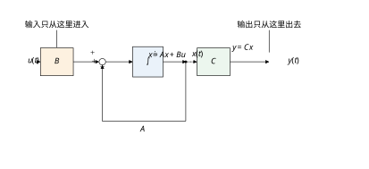
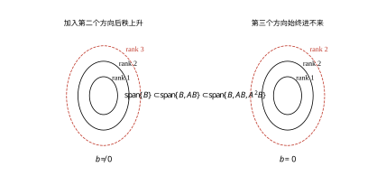
能控性与能观性只由 (A,B)、(A,C) 决定，与控制器参数、参考信号、性能指标都无关。这一点值得单独说，因为现场最容易犯的错误就是“指标不好就调 PID”。
如果某个状态不能控，那么闭环矩阵 A-BK 的这个特征值对任何 K 都不变——它原封不动地留在闭环谱里。证明很短：不能控意味着存在左特征向量 v 使 v^{\mathsf T}B=0 且 v^{\mathsf T}A=\lambda v^{\mathsf T}，于是 v^{\mathsf T}(A-BK)=\lambda v^{\mathsf T}，\lambda 仍是闭环特征值。反过来，不能观意味着存在非零初值使输出恒为零，任何观测器都无法把它和零初值区分开，估计误差里总有一块是指数漂移的。
所以这两个性质只能通过改硬件（加执行器、加传感器、改机械耦合）或改模型（换状态变量、降阶、把不能控部分显式剔除）来解决。控制器设计只能在这个结构给定的前提下做文章。分清“结构问题”与“参数问题”，是本章最重要的一条工程判断。
本章按“原理—步骤—连续—离散—稳定—参数—方法—改进—落地—边界—代码”展开。§51.2 给出四个判据（秩、PBH、Gramian、Hankel）与对偶原理；§51.3 把判据固化成七步检查流程；§51.4 用三阶电机与参数化对象把四个判据全部算一遍；§51.5 讲离散化带来的病态采样；§51.6 区分“可控”与“可镇定”，并说明条件数如何限制后续设计；§51.7 逐个参数说明影响方向与量级；§51.8 给出可执行的检查经验；§51.9 讨论数值改进与模型降阶；§51.10 落到传感器配置、数值实现与现场验证；§51.11 说明方法边界；§51.12 给出可复现代码。
如果只能记住一句话：能控性问“手能不能够到”，能观性问“眼能不能看见”；两者都是结构性质，只能用改硬件或改模型来解决，不能用调控制器来解决。
阅读本章需要三个前置：状态空间与矩阵指数（第 3 章）、矩阵秩与奇异值分解（第 7 章）、采样与零阶保持（第 4 章）。本章不重复这些推导，只在用到时给出结论与出处。
本节把两句话直觉写成可计算的判据。顺序是：先定义“可达”与“能控”，再给出秩判据与 PBH 判据，然后用对偶原理把能观性接上，最后用 Kalman 分解说明传递函数为什么看不见不能控、不能观的部分。
考虑线性时不变系统
\dot{x}=Ax+Bu,\qquad y=Cx \tag{51-1}
其中 x\in\mathbb{R}^{n}，u\in\mathbb{R}^{m}，y\in\mathbb{R}^{p}。给定终态 x_f 与时间 T>0，若存在分段连续输入 u(t)、t\in[0,T]，使得从 x(0)=0 出发有 x(T)=x_f，则称 x_f 在 T 内可达。若对任意 x_f\in\mathbb{R}^{n} 都存在某个 T 使其可达，则称系统完全能控。
工程上更常用的是等价的“任意点到任意点”表述：对任意 x_0,x_1 与某个 T，存在 u 使 x(0)=x_0、x(T)=x_1。对连续时间线性系统，这两种表述等价，因为状态转移矩阵 e^{AT} 处处可逆，把初值平移一下即可。离散时间系统则不然：\Phi 可能奇异，能达与能控要分开讨论，§51.5 会处理这个差别。
能观性的定义是对偶的：若对任意 T>0，由区间 [0,T] 上的输入 u(t) 与输出 y(t) 能唯一确定初态 x(0)，则称系统完全能观。由于 x(0) 一旦确定，全部状态轨迹就确定了，“能观”实际上等价于“能从输出反算全部状态”。
把输入的影响力按时间展开。零初值时，
x(t)=\int_0^t e^{A(t-\tau)}Bu(\tau)\,\mathrm{d}\tau \tag{51-2}
矩阵指数展开成幂级数后，每一项都落在 \mathrm{span}\{B,AB,A^2B,\dots\} 里。由 Cayley-Hamilton 定理，A^n 及更高次幂都能被前 n 个幂线性表示，所以这个张成空间最多到 A^{n-1}B 就封闭了。于是定义能控矩阵
\mathcal{C}=\begin{bmatrix}B & AB & \cdots & A^{n-1}B\end{bmatrix} \tag{51-3}
系统完全能控，当且仅当
\mathrm{rank}\,\mathcal{C}=n \tag{51-4}
这个判据的含义很直白：\mathcal{C} 的列张成的子空间就是可达子空间；秩等于 n，说明可达子空间就是整个状态空间。秩小于 n 时，可达子空间是一个真子空间，维数就是秩。图 51-2 画的正是这件事：b\neq0 时三层椭圆一路扩张到 rank 3，b=0 时第三层不再扩大，停在 rank 2。
单输入系统的 \mathcal{C} 是 n\times n 方阵，秩判据退化为行列式是否为零。这不代表“行列式非零就好用”：行列式只回答“是否为零”，不回答“离零多远”。后面的条件数与 Gramian 就是为回答第二个问题准备的。
秩判据要构造 n\times nm 的矩阵并做秩分解，当 n 较大时既费时又容易受数值误差影响。PBH 判据把问题化到每个特征值上：
\mathrm{rank}\begin{bmatrix}\lambda I-A & B\end{bmatrix}=n, \qquad \forall\lambda\in\mathbb{C} \tag{51-5}
只需对 A 的 n 个特征值逐一检查，不必遍历整个复平面。理由是不能控模态必然对应一个左特征向量 v，满足 v^{\mathsf T}A=\lambda v^{\mathsf T} 且 v^{\mathsf T}B=0；把它代进式 (51-5) 的行向量组，立刻看出秩亏一。反过来，若某个 \lambda 处秩亏，则该特征值对应的左特征向量与 B 的列空间正交，这个模态收不到输入。
PBH 判据有两个工程好处。第一，它直接指出“哪个模态失守”，而不只是“秩不够”。第二，它允许用最小奇异值代替秩：\sigma_{\min}([\lambda I-A,\,B]) 越小，该模态越接近不能控。本章 §51.4 的表 51-3 就是用这个量做参数扫描的。
把能观矩阵按行堆起来：
\mathcal{O}=\begin{bmatrix}C\\ CA\\ \vdots\\ CA^{n-1}\end{bmatrix} \tag{51-6}
系统完全能观，当且仅当 \mathrm{rank}\,\mathcal{O}=n；PBH 形式为 \mathrm{rank}\begin{bmatrix}\lambda I-A\\ C\end{bmatrix}=n 对所有特征值成立。
现在看式 (51-3) 与式 (51-6) 的形状：一个按列堆 B,AB,\dots，一个按行堆 C,CA,\dots。把矩阵转置一下，两者完全同构。这就是对偶原理：
(A,B)\ \text{controllable}\iff(A^{\mathsf T},B^{\mathsf T})\ \text{observable},\qquad C=B^{\mathsf T} \tag{51-7}
式 (51-7) 的意思是：(A,B) 完全能控，等价于转置系统以 B^{\mathsf T} 为观测矩阵时完全能观。
对偶不是数学游戏，它让一半的定理可以只证一次。本章后面所有关于能控的结论，只要把 (A,B) 换成 (A^{\mathsf T},C^{\mathsf T})，就自动得到能观版本。§51.4 的参数化对象会把这条对称性变成一个可以直接核对的现象：能控行列式是 -6b，能观行列式是 +6c，同一个因子 6，符号相反，正好对应“列堆”与“行堆”的转置关系。
既然秩可能不满，就应该把状态空间按“能控／不能控”与“能观／不能观”切成四块。这一步叫 Kalman 分解，它给出一个坐标变换 x=Tz，使系统变成
\begin{bmatrix}\dot{x}_{co}\\ \dot{x}_{c\bar{o}}\\ \dot{x}_{\bar{c}o}\\ \dot{x}_{\bar{c}\bar{o}}\end{bmatrix}= \begin{bmatrix} A_{11}&0&A_{13}&0\\ A_{21}&A_{22}&A_{23}&A_{24}\\ 0&0&A_{33}&0\\ 0&0&A_{43}&A_{44} \end{bmatrix} \begin{bmatrix}x_{co}\\x_{c\bar{o}}\\x_{\bar{c}o}\\x_{\bar{c}\bar{o}}\end{bmatrix} +\begin{bmatrix}B_1\\B_2\\0\\0\end{bmatrix}u \tag{51-8}
输出只从第一块与第三块取：y=\begin{bmatrix}C_1&0&C_3&0\end{bmatrix}z。四个下标分别表示能控能观、能控不能观、不能控能观、不能控不能观。图 51-10 画出了这四块的相对位置与信号流向。
把式 (51-8) 代进传递函数，只有左上角那块活着：
G(s)=C(sI-A)^{-1}B=C_1(sI-A_{11})^{-1}B_1 \tag{51-9}
这就是“传递函数看不见不能控、不能观部分”的代数解释。也解释了为什么工程上做辨识时，辨识出来的模型阶次常常低于物理模型的阶次：那些既收不到输入、又不进输出的模态，在输入输出数据里根本不留痕迹，辨识算法没有理由保留它们。不能控但能观的模态同样会被消掉，因为它虽然能被输出看见，却无法被输入改变，对输入输出关系没有贡献。
最小实现的阶数等于 \mathcal{X}_{co} 的维数，也可以用 Hankel 矩阵的秩算出来：
H=\begin{bmatrix}CB&CAB&CA^2B&\cdots\\ CAB&CA^2B&\cdots&\\ CA^2B&\vdots&&\\ \vdots&&&\end{bmatrix}, \qquad \mathrm{rank}\,H=n_{co} \tag{51-10}
式 (51-10) 是 Ho-Kalman 结论的核心：只靠输入输出数据（马尔可夫参数）就能定出最小阶次。§51.12 的代码用这个办法核对：参数化对象在 b=c=0 时 n=3，Hankel 秩只有 2。
秩判据只回答是或否。要给“程度”一个数，就得用 Gramian。对稳定系统，定义能控 Gramian
W_c=\int_0^{\infty}e^{At}BB^{\mathsf T}e^{A^{\mathsf T}t}\,\mathrm{d}t \tag{51-11}
它是 Lyapunov 方程 AW_c+W_cA^{\mathsf T}+BB^{\mathsf T}=0 的唯一正定解。W_c 正定等价于完全能控；它的特征值越大，说明对应方向越容易被输入推动。把状态 x_f 在时间 T 内推到位所需的最小能量为
E_{\min}(x_f)=x_f^{\mathsf T}W_c(T)^{-1}x_f \tag{51-12}
其中 W_c(T) 是式 (51-11) 把积分上限换成 T 的版本。式 (51-12) 把“能控”翻译成了焦耳：同一个状态，耦合系数降十倍，能量涨一百倍，这就是 §51.1 反例三的由来。
能观 Gramian 是对偶的：
W_o=\int_0^{\infty}e^{A^{\mathsf T}t}C^{\mathsf T}Ce^{At}\,\mathrm{d}t \tag{51-13}
它满足 A^{\mathsf T}W_o+W_oA+C^{\mathsf T}C=0。初值 x_0 在输出上留下的总能量是 x_0^{\mathsf T}W_ox_0；这个量越小，说明该方向越难从输出里看出来。§51.6 会用它解释为什么“能观”的系统在加噪声后仍然估不准。
零阶保持采样后，系统变成
x_{k+1}=\Phi x_k+\Gamma u_k,\qquad y_k=Cx_k, \qquad \Phi=e^{AT_s},\quad \Gamma=\int_0^{T_s}e^{A\tau}B\,\mathrm{d}\tau \tag{51-14}
判据的形式不变，只需把 (A,B) 换成 (\Phi,\Gamma)：
\mathcal{C}_d=\begin{bmatrix}\Gamma&\Phi\Gamma&\cdots&\Phi^{n-1}\Gamma\end{bmatrix}, \qquad \mathrm{rank}\,\mathcal{C}_d=n \tag{51-15}
PBH 判据则在 z 平面上做：对 \Phi 的每个特征值 z_i，要求 \mathrm{rank}\begin{bmatrix}z_iI-\Phi&\Gamma\end{bmatrix}=n。注意 z_i=e^{\lambda_iT_s} 是多对一的映射，不同连续极点可能映到同一个 z，这正是 §51.5 病态采样的根源。
离散 Gramian 是一个有限和：
W_{c,d}=\sum_{k=0}^{N-1}\Phi^k\Gamma\Gamma^{\mathsf T}(\Phi^{\mathsf T})^k \tag{51-16}
N 步能达的充要条件是 W_{c,d} 正定。N=n 就够了，因为 Cayley-Hamilton 保证再多的项都落在前 n 项的张成空间里。
四个判据各有各的用处，不能互相替代。表 51-1 把它们放在一起比较。
| 判据 | 计算量 | 能否定位失守模态 | 数值稳健性 | 典型用途 |
|---|---|---|---|---|
| 秩判据 \mathrm{rank}\,\mathcal{C}=n | O(n^3)，需构造 n\times nm | 否 | 差（量纲敏感） | 快速筛查、理论推导 |
| PBH 判据 | 每个特征值一次 SVD | 是 | 好（可看 \sigma_{\min}） | 定位问题模态、参数扫描 |
| Gramian | 解 Lyapunov 方程 | 部分（看特征向量） | 好 | 能量评估、模型降阶 |
| Hankel 秩 | 由马尔可夫参数构造 | 否 | 中 | 辨识定阶、最小实现 |
表 51-1 给出一个实用顺序：先用 PBH 定位，再用 Gramian 量化，最后用 Hankel 核对最小阶次。秩判据适合写在推导里，不适合直接写进诊断脚本，因为它的结果强烈依赖状态变量的单位。§51.7 会用实测数字说明这一点。
状态变量的选取不唯一。同一个系统可以写成 x，也可以写成 z，两者由可逆矩阵 T 联系：x=Tz。代入式 (51-1) 得
A_z=T^{-1}AT,\qquad B_z=T^{-1}B,\qquad C_z=CT \tag{51-17}
再看两个判据矩阵：\mathcal{C}_z=T^{-1}\mathcal{C}_x，\mathcal{O}_z=\mathcal{O}_xT。两边都只乘了一个可逆矩阵，所以秩不变、可达子空间作为集合也不变（只是换了一组基来描述）。但奇异值会变，行列式会变：\det\mathcal{C}_z=\det(T)^{-1}\det\mathcal{C}_x。只有当 T 是正交阵（或正交阵乘一个标量）时，奇异值谱才保持不变。
这条差别值得写进概念层：能控性本身是坐标无关的结构性质，条件数是坐标相关的表述性质。 前者回答“能不能”，后者回答“在这套坐标下好不好算”。两者都重要，但不能混为一谈。现场说“这个系统不能控”时，指的应当是前者；说“这个模型不好算”时，指的往往是后者。
坐标变换对条件数的影响有明确的上界。对任意可逆 T，
\mathrm{cond}(T^{-1}M)\le \mathrm{cond}(T)\,\mathrm{cond}(M) \tag{51-18}
也就是说，一套病态的坐标最多把条件数放大 \mathrm{cond}(T) 倍，不会凭空造出秩亏，也不会把已经亏的秩救回来。这条不等式正好解释了 §51.7 的实测：转角从弧度换成度，对应 T=\mathrm{diag}(1,1,180/\pi)，\mathrm{cond}(T)=57.3；实测能控条件数从 1.674\times10^{4} 涨到 9.017\times10^{5}，涨了 53.9 倍，恰好贴着上界。选坐标时若能保持 T 接近正交，条件数就不会被坐标本身拖坏。
对单输入单输出系统，还有一个更贴近经典控制的判据。设传递函数为 G(s)=b(s)/a(s)，a 是 n 次特征多项式，b 的次数不高于 n。则
(A,B)\ \text{controllable and}\ (A,C)\ \text{observable} \iff \gcd(a,b)=1 \tag{51-19}
也就是说，系统既完全能控又完全能观，当且仅当分子分母互质，此时 G(s) 的阶次（分母在约分后的次数）等于 n，实现是最小实现。
反过来，若 a 与 b 有公根，这个根对应的模态在传递函数里被约掉了。仅凭传递函数无法判断它到底是不能控还是不能观——两种情形在输入输出关系上留下的痕迹完全一样，都是“消失”。这正是 §51.2.5 中 Kalman 分解要把两者分开的原因：传递函数把它们混在了一起，状态空间才能把它们分开。
本章的电机是一个干净的例子。u\to\theta 的传递函数有三个极点、没有零点，三个极点都保留，阶次 3，与 Hankel 秩一致。u\to\omega 的传递函数多出一个 s=0 的零点，与积分极点严格对消，阶次降到 2。物理上就是那句话：转速信号里不含绝对位置。这与 §51.4 表 51-8 中“仅测转速秩为 2”是同一件事的两种说法，一个从传递函数看，一个从能观矩阵看。
数值上要当心一点：严格对消只存在于精确算术中。实际辨识出来的模型，极点与零点往往只是“接近”对消，例如 -1 与 -1.0001。此时若用符号运算强行约分，会删掉一个真实存在的模态；正确做法是看 Hankel 矩阵的奇异值衰减——若某对奇异值只差一个量级，说明该模态还在，不能删。§51.9 的降阶会按这个原则操作。
多变量系统没有这么简洁的互质判据，要改用传递函数矩阵的 McMillan 阶次，或者直接算 Hankel 秩。形式变了，结论不变：最小实现的阶次等于输入输出关系里真正“活着”的模态数。
秩判据回答“能不能到”，还有一个量回答“几步能到”。定义能控性指数
\nu=\min\left\{k:\ \mathrm{rank}\begin{bmatrix}B&AB&\cdots&A^{k-1}B\end{bmatrix}=n\right\} \tag{51-20}
单输入满秩时，前 n-1 列最多张成 n-1 维，所以必然 \nu=n。多输入时列数增长更快，\nu 可以小于 n，下界是 \lceil n/m\rceil。本章电机是单输入三阶，\nu=3；参数化对象也是 3。
这个量在离散设计里很实用。离散系统从原点到达任意状态，N=\nu 步就够，不需要更多。换句话说，若某个 MPC 的预测步长小于 \nu，它在结构上就不可能覆盖全部状态方向，无论权重怎么调。反过来，预测步长取得比 \nu 大很多，也不会带来新的可达方向，只是增加了计算量。
能控性指数还有一个等价的代数说法：单输入系统完全能控，当且仅当 A 的最小多项式次数等于 n。最小多项式的次数小于 n，说明存在一个低阶关系把高次幂约掉了，能控矩阵的列必然线性相关。这条等价关系在理论推导里很好用，因为它把“矩阵秩”换成了“多项式次数”，可以手算。
秩判据给出一个数，工程上往往还需要一个“子空间”，用来回答“这个具体的物理状态在不在可控范围内”。做法是一次 SVD。
把能控矩阵做奇异值分解 \mathcal{C}=U\Sigma V^{\mathsf T}，取前 r 个左奇异向量 U_r（r 是判定的秩），它们张成的就是可达子空间。U_r 是标准正交的，于是到该子空间的投影矩阵是
P=U_rU_r^{\mathsf T} \tag{51-21}
任给一个方向 v（例如某个物理状态的单位向量 e_i），它到能控子空间的距离是 \|(I-P)v\|。这个数接近零，说明该方向能控；接近 1，说明完全不能控；中间值说明“部分能控”，正好对应弱能控的工程情形。
用这种方法检查本章电机：e_1,e_2,e_3 三个方向到能控子空间的距离都接近零，说明电流、转速、转角都能被电压推动。换成“仅测转速”的能观侧，e_3（转角）到能观子空间的距离是 1，与秩缺一的结论一致，但比“秩 2”多给了一条信息——它明确指出缺的是哪个方向。
数值上有两点要注意。第一，SVD 的左奇异向量符号不唯一，U_r 的每一列可以整体变号，这不影响子空间，也不影响式 (51-21)。第二，U_r 只在 r 的判定正确时才有意义；若秩判错，子空间就错。所以这一步必须排在相对容差判秩之后，不能颠倒。
能控子空间还有一个用处：它是坐标变换的基。把状态写成 x=U_rz_c+U_\perp z_{\bar c}，前一部分是能控的，后一部分是不能控的，Kalman 分解的第一步就是这件事。§51.2.5 的式 (51-8) 看起来复杂，实际计算只需两次 SVD：一次对能控矩阵，一次对能观矩阵。
本节把判据固化成一套七步流程。它不是理论推导，而是工程检查单：每一步都有明确的输入、输出和“不通过时怎么办”，照着走一遍，半小时内能对一台设备的可设计性给出结论。图 51-11 是这七步的流程图。
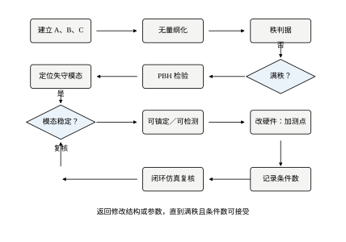
先确认三件事：A、B、C 是否来自同一个工作点的线性化；D 是否为零（有直通时能观性判据要改）；各状态是否已经折算到可比的数量级。
第一步不是数学，却最容易出错。常见的问题是：A 由物理方程写出，B 却由实验拟合得到，两者不在同一个工作点；或者转角用弧度、转速用 r/min、电流用 mA，三个状态差了三四个数量级，秩分解的结果就会被大数淹没。§51.7 的实测显示，同一台电机，仅仅把转角从弧度换成度，能控矩阵的条件数就从 1.67\times10^4 涨到 9.02\times10^5。
推荐的做法是先做无量纲化：把每个状态除以它的额定值或允许偏差，使所有状态在正常工况下的量级接近 1。这一步不改系统的性质，只改数值表现，但对后续判据的可读性影响极大。
对连续系统，直接构造 \mathcal{C} 与 \mathcal{O}，或者跳过构造、直接做 PBH。前者直观，后者稳健。
构造时注意：\mathcal{C} 的列数随 n 与输入维数增长，n=20、m=4 时就有 80 列。此时不要把所有列都塞进一个矩阵做 SVD，而应按块逐步正交化，或者直接改用 PBH。这不是理论问题，是内存与时间问题。
numpy.linalg.matrix_rank 的默认容差与矩阵范数有关，不同版本的默认值不完全一致；跨语言移植时更容易出现“MATLAB 判满秩、Python 判亏秩”的分歧。工程上应显式给出相对容差：
\mathrm{rank}_\tau(M)=\#\{i:\sigma_i(M)>\tau\,\sigma_1(M)\} \tag{51-22}
\tau 的取法取决于模型的精度。若模型参数有 1% 的不确定度，取 \tau=10^{-2} 才诚实；若模型来自高精度辨识，可以取 10^{-6}。§51.4 的实测显示：b=10^{-6} 时，\tau=10^{-8} 判满秩，\tau=10^{-6} 判亏秩。同一个系统、同一份数据，结论相反，差别只在容差。所以报结论时必须同时报容差，否则这个结论无法复核。
把 A 的特征值按实部排序，优先检查实部最大（最不稳定）与绝对值最小（最慢）的那几个。对每个 \lambda_i 计算 \sigma_{\min}\begin{bmatrix}\lambda_iI-A&B\end{bmatrix}，记下数值。
这一步的产出不是“是／否”，而是一张表：每个模态对应一个数。数越大越安全；接近零就要警惕。若某个不稳定模态的 \sigma_{\min} 小于 10^{-6}，在投入运行前必须解决，因为它意味着任何扰动都会把这个模态推向发散，而控制器对它无能为力。
PBH 只告诉你“\lambda_i 失守”，不告诉你“哪个零件出了问题”。要落到物理，需看该特征值对应的左特征向量 v_i：v_i 中绝对值最大的分量，就是该模态的主要参与状态。
例如两台质量块通过弹簧耦合，若第二个质量块上没有执行器，那么耦合模态的左特征向量会在第二个质量块的速度分量上有大值。找到这个分量，就能判断该加电机、该换联轴器，还是该把该模态从控制目标里剔除。
不能控不等于不可用。若失守模态本身稳定，系统仍是可镇定的：控制器管不了它，但它自己会衰减，不会破坏闭环。工程上大量系统属于这一类，比如执行器带宽之外的高频柔性模态。
判据很简单：把所有不能控模态的实部列出来，若全部小于零，则 (A,B) 可镇定；只要有一个实部大于等于零，就必须改硬件。能观侧同理：不能观但稳定的模态对应“可检测”，不能观且不稳定的模态则无法用任何观测器估计。
前六步发现问题后，第七步是唯一能真正改变结果的一步：加执行器、加测点、改机械耦合、改采样周期。改完必须重跑前六步，并在设计文档里留下三个数：秩、最小奇异值、条件数。
表 51-2 把这七步的判定标准与失败动作列在一起。
| 步 | 动作 | 通过标准 | 不通过时 |
|---|---|---|---|
| 1 | 统一工作点与量纲 | 状态量级在同一数量级 | 无量纲化后重算 |
| 2 | 构造 \mathcal{C}、\mathcal{O} 或 PBH | 矩阵可复现 | 检查 D 与维度 |
| 3 | 相对容差判秩 | 与模型精度匹配 | 报出容差并说明来源 |
| 4 | 逐特征值 PBH | 不稳定模态 \sigma_{\min}>10^{-6} | 进入第五步 |
| 5 | 左特征向量定位 | 找到主要参与状态 | 检查模型耦合是否写错 |
| 6 | 可镇定／可检测判定 | 失守模态全部稳定 | 必须改硬件 |
| 7 | 改结构并复核 | 三项指标均记录在案 | 回到第一步 |
流程走完，得到的不只是一句“能控”或“不能控”，而是一份可以交给机械、电气、软件三方共同复核的证据链。这比一个布尔值有用得多。
四个判据本来就有分工，多数时候结论一致。但在接近奇异的模型上，它们会给出看起来矛盾的答案，这时需要一条仲裁规则，否则现场会陷入“每个软件都说自己对”的僵局。
矛盾一：秩满，但 \sigma_{\min} 极小。 这是最常见的组合。秩判据用的是同一个容差，\sigma_{\min} 恰好高于门限时判满秩；PBH 则会直接告诉你“这个模态只比零大一点”。仲裁规则：结构上按满秩处理，工程上按弱能控处理。 具体做法是保留满秩的结论用于理论推导，同时在设计文档里标注该模态的能量需求与增益放大倍数，并据此限制闭环带宽。参数化对象 b=10^{-4} 就是这一档：秩 3，但能量比 b=1 时大 10^{8} 倍。
矛盾二：PBH 显示某模态很弱，秩判据显示一切正常。 这两者其实不矛盾，只是粒度不同。PBH 是逐个模态算的，秩判据是把所有模态混在一起算的；只要有一个模态的 \sigma_{\min} 被其他模态的大奇异值掩盖，秩判据就看不出问题。仲裁规则：定位问题以 PBH 为准，总体结论以秩判据为准。 两者都要写进报告，不能只写一个。
矛盾三：能控、能观都满秩，Hankel 秩却小于 n。 这在数学上不该发生：满秩意味着没有零极对消，Hankel 秩应当等于 n。出现这种情况，先怀疑三件事：D\neq0 而判据仍按 D=0 写；马尔可夫参数算错了一项；模型里有极靠近但不重合的零极对，被数值算法当成对消。仲裁规则：以秩判据为准，查 Hankel 矩阵的构造。 若确认是接近对消，则两者都对，只是“接近”的程度需要额外报出来。
矛盾四：连续系统满秩，离散后掉秩。 这不是矛盾，而是采样引入的新事实。仲裁规则：以实际采样周期下的离散判据为准。 控制器跑在离散时间里，连续时间的结论只是理想化的上界。§51.5 会看到，T_s=\pi 时连续振子的秩从 2 掉到 1，此时拿连续结论去设计离散观测器，误差会随时间指数增长。
把四条规则合起来，可以压成一句话：结构判定看秩，定量判定看 \sigma_{\min} 与 Gramian，一致性核对看 Hankel，最终执行看离散判据；冲突时取更保守的那一个。 这条规则不追求理论上的优雅，只保证现场不会因为判据分歧而做出冒险的决定。
七步流程默认 D=0。真实模型里 D 常常不为零，例如传感器直接测量输入电压、或执行器带前馈通道。这时判据要不要改？
能控性完全不受影响。D 只出现在输出方程里，与“输入能不能推动状态”无关，所以式 (51-4)、(51-5) 原样可用。
能观性也不改判据形式，但要先把已知项扣掉。y=Cx+Du 中 u 是已知的，所以 y-Du=Cx 就是一个标准的无直通输出。用 y 直接做观测器残差而不减 Du，残差会一直带着 Du 的偏置，表现为“稳态估计总是差一块”。
有两个数值后果值得单独提醒。第一，D\neq0 时传递函数是双真的，高频增益不为零，采样时高频噪声会直接穿过，aliasing 比 D=0 时更严重；这时前置抗混叠滤波不能省。第二，Hankel 秩的构造要用马尔可夫参数 CA^{k}B，D 只影响第零个参数 CB+D，不影响秩，所以最小实现的阶次仍然由 CA^{k}B 决定。
流程上只需在第一步加一句：确认 D 是否为零，非零时在观测器与残差计算里显式扣除。这一句很不起眼，却是现场“估计值长期偏置”的常见原因。
判据给出的“能控”“能观”只是存在性。要让它对设计起作用，每条结论都必须折成一个数、一个动作、一个复核方法。以下三条最常用。
第一，能控性指数决定最短时间尺度。 电机 n=3、单输入，按 §51.2.11 的定义算得 \nu=3：把状态从原点搬到任意点，至少要 3 个采样步。若预测控制的步长取 2，或轨迹整形的过渡时间短于 3 个采样周期，结构上就无解，调权重没有用。动作是：把预测步长设为不少于 \nu，并留一步余量；复核方法是用 §51.12 的 min_energy 在 N=\nu-1 与 N=\nu 两种情形下各算一次，前者应当报奇异。
第二，条件数决定噪声与不确定度的放大上限。 本章电机的 \mathrm{cond}(\mathcal{C})=1.67\times10^{4}，\mathrm{cond}(\mathcal{O})=25.0。能观侧的条件数直接对应测量噪声被放大多少，§51.6 的估算是 34 倍；能控侧的条件数对应输入误差被放大多少。动作是：把这两个数写进噪声预算，据此定观测器带宽上限与滤波时间常数；复核方法是注入已知幅值的噪声，看估计误差的稳态标准差是否落在预算之内。顺序不能反——先定带宽再算放大倍数，等于先决定答案再检查。
第三，不能观方向决定该补哪个硬件。 秩缺一时，只报“秩 2”没有可操作性；用 §51.2.12 的投影算出不能观方向（本电机仅测转速时是 e_3），才能说清缺的是转角。动作是加测点或改测点位置，而不是提高观测器增益；复核方法是加测点后重算 PBH，确认原来那个零变成非零。
三条约束的共同点是都以“数”结尾，不以形容词结尾。评审会上最没用的结论是“系统是能控的”，最有用的结论是“能控性指数 3、条件数 1.67\times10^{4}、该方向的噪声放大约 34 倍，因此带宽上限必须由这个放大倍数反推”。前者无法反驳也无法执行，后者可以逐条核对。
本节用两个对象把所有判据算一遍。第一个是三阶直流电机，代表“实际系统”；第二个是参数化三阶对象，代表“用来暴露结构的教学模型”。前者给出工程上会遇到的真实数值，后者给出可以手算核对的解析关系。
取状态 x=\begin{bmatrix}i&\omega&\theta\end{bmatrix}^{\mathsf T}，输入为电枢电压 u，输出为转角 \theta。参数取小型伺服电机的量级：R=0.5\ \Omega，L=0.01 H，K_e=K_t=0.05，J=0.002 kg·m²，b=5\times10^{-4} N·m·s/rad。状态方程为
A=\begin{bmatrix}-50&-5&0\\ 25&-0.25&0\\ 0&1&0\end{bmatrix}, \qquad B=\begin{bmatrix}100\\0\\0\end{bmatrix}, \qquad C=\begin{bmatrix}0&0&1\end{bmatrix} \tag{51-23}
特征值为 -47.345838、-2.904162、0。三个模态的物理含义很清楚：-47.3 是电气模态（电枢电感与电阻决定的电流响应），-2.9 是机电模态（转动惯量与反电动势决定的转速响应），0 是转角积分器。三者时间尺度相差一个数量级以上，这正是后面数值条件变差的物理原因。
能控矩阵的三个奇异值为 268747.80、144.89、16.05，秩为 3，条件数 1.674\times10^{4}。能观矩阵的三个奇异值为 25.001、1.000、0.99995，秩为 3，条件数只有 25.0。两个条件数差了两个数量级，原因在于输入只从电流这一路进入，而电流到转速、转速到转角要经过两级耦合，越往后越弱；输出直接取转角，三个状态在输出上的“可见度”反而比较均衡。
Hankel 秩为 3，传递函数 u\to\theta 有三个极点、没有零点，说明这台电机的模型本身就是最小实现，不存在零极对消。若把输出换成转速，传递函数会多出一个 s=0 的零点，与积分极点对消，阶次降到 2；这不是数值问题，而是物理事实：转速信号里不含绝对位置信息。
表 51-3 给出逐特征值的 PBH 数值。
| 特征值 | 能控 \sigma_{\min} | 能观 \sigma_{\min} | 判定 |
|---|---|---|---|
| 0 | 0.99844 | 1.00000 | 均可 |
| -2.904162 | 3.06967 | 0.30944 | 均可 |
| -47.345838 | 47.31714 | 0.00990 | 能观偏弱 |
表 51-3 的读法与秩判据不同：这里没有零，说明三个模态都没有结构性失守；但电气模态的能观奇异值只有 9.9\times10^{-3}，比另外两个小两个数量级。这意味着从转角反算电流，对测量噪声非常敏感：转角上 10^{-3} rad 的噪声，折算到电流估计上可能达到安培级。§51.6 会把这件事讲清楚。
第二个对象刻意写成
A=\begin{bmatrix}0&1&0\\ -2&-3&0\\ 0&0&-4\end{bmatrix}, \qquad B=\begin{bmatrix}0\\1\\b\end{bmatrix}, \qquad C=\begin{bmatrix}1&0&c\end{bmatrix} \tag{51-24}
前两个状态构成可控伴随型，第三个状态是解耦的一阶模态，只通过 b 接受输入、通过 c 被输出看见。手算能控矩阵：
\mathcal{C}=\begin{bmatrix}0&1&-3\\ 1&-3&7\\ b&-4b&16b\end{bmatrix}, \qquad \det\mathcal{C}=-6b \tag{51-25}
能观矩阵为
\mathcal{O}=\begin{bmatrix}1&0&c\\ 0&1&-4c\\ -2&-3&16c\end{bmatrix}, \qquad \det\mathcal{O}=6c \tag{51-26}
两个行列式只差一个符号，正是对偶原理最直接的体现。它也给出一条实用的检查：若某台设备的能控行列式与能观行列式在参数变化时表现完全相反，先怀疑状态变量的排列或转置写错了。
表 51-4 是 b 与 c 的扫描结果，全部由 §51.12 的脚本实跑得到。
| b 或 c | \det | 秩 | \sigma_{\min} | 条件数 |
|---|---|---|---|---|
| b=1 | -6.000 | 3 | 0.2691 | 6.86\times10^{1} |
| b=0.1 | -0.600 | 3 | 0.1430 | 5.91\times10^{1} |
| b=0.01 | -0.060 | 3 | 0.01602 | 5.18\times10^{2} |
| b=10^{-4} | -6.00\times10^{-4} | 3 | 1.604\times10^{-4} | 5.17\times10^{4} |
| b=0 | 0 | 2 | 0 | \infty |
| c=1 | +6.000 | 3 | 0.2930 | 5.78\times10^{1} |
| c=0.1 | +0.600 | 3 | 0.1416 | 2.88\times10^{1} |
| c=0.01 | +0.060 | 3 | 0.01601 | 2.34\times10^{2} |
| c=10^{-4} | +6.00\times10^{-4} | 3 | 1.604\times10^{-4} | 2.33\times10^{4} |
| c=0 | 0 | 2 | 0 | \infty |
表 51-4 有两处值得停下来看。第一，条件数不是单调的：b 从 1 降到 0.1 时，条件数反而从 68.6 降到 59.1。原因是条件数衡量的是三个方向的“拉开程度”，而不是某一个系数的大小；当两列的长度接近时，矩阵反而更平衡。第二，c 侧的条件数在 10^{-4} 时是 2.33\times10^{4}，比 b 侧的 5.17\times10^{4} 小一半，这个差别来自 A 的第三行结构，不是笔误。
图 51-3 把表 51-4 的规律画在对数坐标上：左图的三条线（|\det|、6b、\sigma_{\min}）在 b<0.1 后几乎重合，说明小系数区间里行列式与最小奇异值同阶；右图的条件数在 b<0.01 后以每十倍 10^{3} 的速度上升，很快就越过双精度的实用上限。这就是“理论满秩、工程不可用”的定量界限。
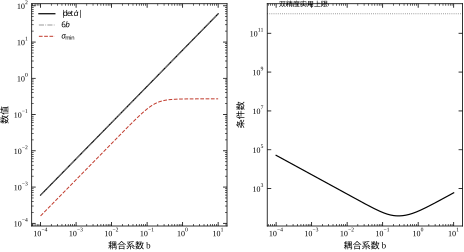
把 b=c=0 代进式 (51-24)，第三个状态既收不到输入也进不了输出。表 51-5 是此时的 PBH 数值。
| 特征值 | 能控 \sigma_{\min} | 能观 \sigma_{\min} |
|---|---|---|
| -1 | 0.430 | 0.689 |
| -2 | 0.689 | 0.430 |
| -4 | 0.000 | 0.000 |
表 51-5 的第三行两个零，精确地指向 -4 这个模态。前两行不仅非零，而且数值相当大，说明它们与输入、输出的耦合是健康的。图 51-5 把这张表画成柱状图，零高度的那一对柱子就是失守模态。
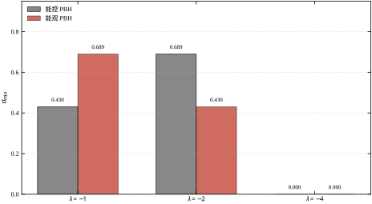
此时 Hankel 秩从 3 降到 2。注意 b=0、c=1 的组合下 Hankel 秩仍然是 2：第三个模态能被输出看见，却不能被输入改变，对传递函数没有贡献，因此照样被消掉。这条结论在辨识里很重要——辨识算法给出的最低阶模型，不会保留任何不能控模态，哪怕它在物理上真实存在且能被测量。
对 b=c=1 的参数化对象，能控 Gramian 的特征值为 0.283163、0.089084、0.002753，能观 Gramian 的奇异值为 1.045345、0.078812、0.000843。两组数都跨了三个数量级，说明三个方向的“可推动程度”与“可见程度”差别很大，尽管秩都是 3。
把第三个状态推到 1 所需的最小能量随 b 的变化列在表 51-6 中。
| b | 最小能量 |
|---|---|
| 1 | 2.000\times10^{2} |
| 0.1 | 2.000\times10^{4} |
| 0.01 | 2.000\times10^{6} |
| 10^{-3} | 2.000\times10^{8} |
表 51-6 的规律是精确的平方反比：E_{\min}=200/b^{2}。原因不难看出：B 的第三个分量是 b，W_c 的 (3,3) 元素正比于 b^{2}，取逆之后就是 1/b^{2}。这条解析关系比任何仿真都可靠，可以直接用来做选型估算：若执行器与目标模态的耦合系数只有 10^{-3}，想推动同样的状态，能量需求是耦合良好时的 10^{6} 倍，绝大多数执行器都撑不住。
时间也是成本。表 51-7 给出同一对象在有限时间 T 内到达 x_3=1 所需的最小能量。
| T (s) | 最小能量 |
|---|---|
| 0.2 | 1.360\times10^{5} |
| 0.5 | 4.109\times10^{3} |
| 1.0 | 6.311\times10^{2} |
| 2.0 | 2.447\times10^{2} |
| 5.0 | 1.997\times10^{2} |
表 51-7 说明“能控”是有时间前提的：同样一个状态，要求 0.2 s 内到位比要求 5 s 内到位贵 680 倍。当 T=5 s 时，能量已降到无限时域值的 1.0006 倍，相对误差 5.99\times10^{-4}，可以认为收敛。图 51-6 把三个奇异值随 T 的变化画了出来，最小那个奇异值上升得最慢，正对应“最难推动的方向需要更长时间才能被激励起来”。
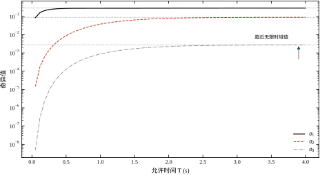
同一个电机，换不同的测量组合，能观性差别很大。表 51-8 是六种配置的实测结果。
| 测量配置 | 秩 | 条件数 | 最小奇异值 |
|---|---|---|---|
| 仅转角 | 3 | 2.500\times10^{1} | 0.99995 |
| 仅转速 | 2 | \infty | 0 |
| 仅电流 | 2 | \infty | 0 |
| 转角+转速 | 3 | 1.263\times10^{3} | 1.0 |
| 转角+电流 | 3 | 2.389\times10^{3} | 1.0 |
| 三者全测 | 3 | 2.702\times10^{3} | 1.0 |
表 51-8 有两个反直觉的结果，都值得记住。
第一，测点少不一定差。只测转角时条件数是 25.0，反而是六种配置里最好的；加了转速或电流之后，条件数涨到 10^{3} 量级。原因是转角与转速在数值上几乎线性相关（转速是转角的导数），两行放在一起近似共线，矩阵的条件数被这种冗余拉坏。多装一个传感器，能观性从“不满秩”变成“满秩”是质变；从“满秩”到“更满秩”往往只是重复信息，甚至会恶化数值条件。
第二，仅测转速时秩只有 2，缺的正是转角。这不是精度问题，是结构问题：C A^{k} 的第三列恒为零，转角从来没有进入过任何一个输出方程。现场用测速机做位置闭环之所以必须加零位开关，根子就在这里。仅测电流时同理，电流方程里根本不含转角，秩缺一。
图 51-7 把这台电机的结构与可选测点画在一起：实线是必选的转角，虚线是转速与电流两个可选测点，它们各自补的是不同方向的信息。
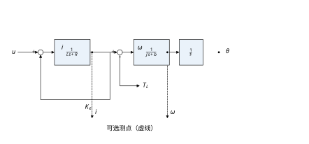
前面所有数字都还停在“状态单位”里：能量是 200，条件数是 1.674\times10^{4}。这些数对做数学的人够用，对选电源、选电机的人不够用。这一步换算不难，但很少有人写出来，结果是判据算得很漂亮，采购时仍然凭经验拍脑袋。
先看能量。式 (51-11) 定义 Gramian 时用的输入是 u 本身，所以 E_{\min}=\int_0^{T}u^{2}\,\mathrm{d}t 的单位是 \mathrm{V}^{2}\cdot\mathrm{s}（电压以伏特计）。参数化对象 b=1、目标 x_3=1 时 E_{\min}=200，含义是：把这一个状态推到位，至少要在允许时间内累积 200\ \mathrm{V}^{2}\cdot\mathrm{s} 的输入能量。若允许 T=1 s，等效的均方根电压是
u_{\mathrm{rms}}=\sqrt{E_{\min}/T}=\sqrt{200}=14.1\ \mathrm{V}
若只给 T=0.2 s，同一目标需要 1.36\times10^{5}，均方根电压变成 824\ \mathrm{V}。一台 24 V 供电的伺服，在 0.2 s 内最多能提供 24^{2}\times0.2=115\ \mathrm{V}^{2}\cdot\mathrm{s}，比需求小三个数量级。这就是“理论能控、工程不能控”的算术形式：不是秩不够，是电源不够。
同样的换算可以用在耦合系数上。b=0.1 时 E_{\min}=2\times10^{4}，即使给足 5 s，均方根电压也要 63.2\ \mathrm{V}；T=1 s 时是 141\ \mathrm{V}。这两个数都超出了一般低压伺服的范围。反过来说，b=1、T=2 s 时只要 11.1\ \mathrm{V}，T=5 s 时只要 6.3\ \mathrm{V}，宽裕得多。表 51-7 的那些能量数字，换成电压之后才真正能拿去和电源规格对照。
还有两点细节。
第一，目标幅值的影响是平方的。x_3=1 rad 要 200\ \mathrm{V}^{2}\cdot\mathrm{s}，x_3=0.01 rad 只要 0.02\ \mathrm{V}^{2}\cdot\mathrm{s}，均方根电压 0.14\ \mathrm{V}。小行程定位的能控性通常不是问题，大行程回零、大角度重定位才是。做能量核算时要把最大行程代进去，不能用小信号数据外推。
第二，均方根电压不是峰值电压。最小能量输入 u(t)=B^{\mathsf T}e^{A^{\mathsf T}(T-t)}W_c(T)^{-1}x_f 在区间两端往往远大于平均值，峰值可能是均方根的几倍。选电源要看峰值，选散热要看均方根，两者不能混。工程上的稳妥做法是把均方根需求乘以 3 到 5 倍作为峰值余量，再和电源的短时过载能力对照。
把这一节的做法推广一下，可以得到一条通用流程：算 E_{\min} → 除以允许时间得均方根 → 乘峰值系数 → 与电源、执行器规格对照。四步都不需要额外建模，全部来自本章已有的量。做完这四步，能控性检查才算真正接到了硬件上。
前面的六种测点组合都是“加传感器”，还有一种更彻底的变化：换掉唯一的输出。若把输出从转角改成转速，C=\begin{bmatrix}0&1&0\end{bmatrix}，系统的能观性完全变了。
能观矩阵秩只有 2，条件数无穷大。传递函数 u\to\omega 只有两个极点，多出的那个零点在原点，与积分极点严格对消。Hankel 秩也是 2。三个判据一致地说明：从转速通道看，转角这个模态根本不存在。
这个结论听起来像缺陷，其实是串级控制的理论依据。速度环只需要转速，用测速机或编码器差分就够，不需要绝对位置；位置环在外面再包一层，用编码器提供绝对位置。两层各管一部分状态，每一层面对的都是低阶、条件良好的子问题。把一台三阶电机拆成“二阶速度环 + 一阶位置环”，比用一个三阶观测器同时估三个状态更容易调，也更抗噪。
反过来，若硬要用一个观测器从转速同时估出转角，数学上做不到——不是算法不够好，而是信息不在。这时候“加一个零位开关”的成本，远低于在算法上纠缠的成本。这条判断在 §51.1 的反例二里已经出现过，这里用传递函数的语言再说一遍，是因为现场工程师更熟悉零极点。
同样的分析可以套到电流输出上：C=\begin{bmatrix}1&0&0\end{bmatrix}，能观矩阵秩 2，缺的是两个机械状态。电流环单独闭环没有问题，但它对机械状态一无所知，不能用来做位置控制。这也解释了为什么驱动器厂商给的“电流环带宽”指标再高，也不能替代外环的位置反馈。
连续系统能控，采样之后不一定还能控；连续系统能观，采样之后也不一定能观。这不是数值误差，而是采样把连续时间的无穷维信息压成了离散序列，某些频率上的信息会 aliasing 到一起。本节用无阻尼振子把这件事算到小数点后。
零阶保持下，连续系统 (A,B,C) 变成
x_{k+1}=\Phi x_k+\Gamma u_k,\qquad y_k=Cx_k, \qquad \Phi=e^{AT_s},\quad \Gamma=\int_0^{T_s}e^{A\tau}B\,\mathrm{d}\tau \tag{51-27}
判据照搬式 (51-15)：\mathrm{rank}\,\mathcal{C}_d=n。区别在于，\Phi 的特征值是 z_i=e^{\lambda_iT_s}，多个连续极点可能映到同一个 z。一旦有两个模态在 z 平面上重合，它们在离散系统里就再也分不开，能控性与能观性同时退化。
对连续能控的系统，ZOH 采样在“绝大多数” T_s 下保持能控，例外是一组离散的 T_s 值。工程上不能只依赖这个“绝大多数”，必须对实际选定的 T_s 做一次数值核对。
取无阻尼振子
A=\begin{bmatrix}0&1\\ -\omega^{2}&0\end{bmatrix}, \qquad B=\begin{bmatrix}0\\1\end{bmatrix}, \qquad C=\begin{bmatrix}1&0\end{bmatrix}, \qquad \omega=1\ \mathrm{rad/s} \tag{51-28}
当 T_s=\pi 时，\cos\omega T_s=-1、\sin\omega T_s=0，于是
\Phi=\begin{bmatrix}-1&0\\0&-1\end{bmatrix}=-I, \qquad \Gamma=\begin{bmatrix}2\\0\end{bmatrix} \tag{51-29}
能控矩阵为 [\Gamma,\ \Phi\Gamma]=\begin{bmatrix}2&-2\\0&0\end{bmatrix}，秩只有 1。物理上很好理解：采样周期正好是半个振荡周期，每次采样时振子都处在镜像位置，输入只能改变“当前这一侧”的幅值，无法区分两个相位。能观侧同理，\mathcal{O}_d=\begin{bmatrix}C\\ C\Phi\end{bmatrix}=\begin{bmatrix}1&0\\-1&0\end{bmatrix}，秩也是 1。
数值上，脚本在 T_s=\pi 处算出的能控行列式为 6.108\times10^{-16}，能观行列式为 1.527\times10^{-16}，都是双精度舍入的量级，实际就是零。图 51-9 把 |{\det}| 随 T_s 的变化画成对数曲线，在 \pi/2 的奇数倍处出现尖谷；T_s=2\pi 处更彻底，\Gamma 本身等于零，输入在整周期上的积分抵消了。
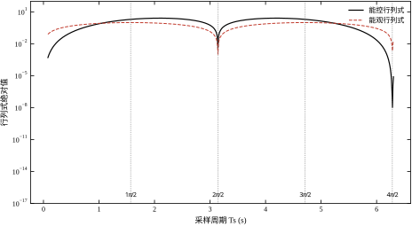
把几个关键采样周期的实测值列在表 51-9 中。
| T_s | |\det\mathcal{C}_d| | |\det\mathcal{O}_d| | 能控秩 | 能观秩 |
|---|---|---|---|---|
| \pi/2 | 2.000 | 1.000 | 2 | 2 |
| \pi | 6.108\times10^{-16} | 1.527\times10^{-16} | 1 | 1 |
| 3\pi/2 | 2.000 | 1.000 | 2 | 2 |
| 2\pi | 1.013\times10^{-46} | 3.054\times10^{-16} | 1 | 1 |
有人会想：真实系统总有阻尼，极点不在虚轴上，采样应该不会这么巧。表 51-10 的实测否定了这个想法。
| 阻尼 | T_s=\pi/2 能控秩 | T_s=\pi/2 能观秩 | T_s=\pi 能控秩 | T_s=\pi 能观秩 |
|---|---|---|---|---|
| 0.05 | 2 | 2 | 1 | 1 |
加 0.05 的阻尼后，T_s=\pi 处的能观行列式从 1.5\times10^{-16} 升到 1.766\times10^{-15}，仍然在舍入误差量级。原因是阻尼只把极点从 \pm\mathrm{j}\omega 挪到 -\zeta\omega\pm\mathrm{j}\omega_d，而 \omega_d 与 \omega 的差别在 \zeta=0.05 时只有 0.13%，半个周期的镜像关系基本没变。阻尼改变的是衰减速度，不改变 aliasing 的几何关系。想让采样避开这个陷阱，只能改 T_s，不能指望对象“自己变好”。
离散 PBH 判据写成：对 \Phi 的每个特征值 z_i，
\mathrm{rank}\begin{bmatrix}z_iI-\Phi&\Gamma\end{bmatrix}=n, \qquad \mathrm{rank}\begin{bmatrix}z_iI-\Phi\\ C\end{bmatrix}=n \tag{51-30}
它与连续 PBH 的差别在于 z_i 是复平面单位圆内的点，且多个连续模态可能映到同一个 z_i。一旦重合，式 (51-30) 必然对某个 z_i 亏秩，两个模态同时失守。
选采样周期有三条可执行的规则。第一，对最高关注的振荡频率 \omega_{\max}，要求 \omega_{\max}T_s<\pi/5，即每个振荡周期至少采 10 个点，远离 \pi 的奇数倍。第二，采样周期不要取工频或机械固有频率的整数分之一，避免长期同步激励。第三，选定之后必须跑一次式 (51-15) 与式 (51-30)，把秩与最小奇异值记录下来。
第一条规则是经验值，后两条是硬检查。三条一起用，能挡住绝大多数采样引起的结构性失守。若受限于算力必须用较大的 T_s，可以在控制器里加一个抗混叠前置滤波器，把 \omega_{\max} 以上的分量先滤掉，再采样；这属于第 14 章的内容，本章不展开。
T_s 太大掉秩，T_s 太小是不是就一定好？不是。脚本在无阻尼振子上把 T_s 从 1 s 一路缩到 1 ms，秩始终是 2，但条件数一路涨：T_s=1 s 时 1.83，0.1 s 时 19.98，0.01 s 时 2.00\times10^{2}，0.001 s 时 2.00\times10^{3}。规律很整齐：条件数与 T_s^{2} 成反比，行列式与 T_s^{3} 成正比。
原因是展开。T_s 很小时
\Gamma\approx T_sB,\qquad \Phi\Gamma\approx T_sB+T_s^{2}AB \tag{51-31}
两列都以 T_sB 为主项，差别只有 O(T_s^{2})。把它们并排放进能控矩阵，两列几乎平行，行列式按 T_s^{3} 缩小，条件数按 T_s^{-2} 放大。秩没有丢，但这两个列向量越来越难区分，任何一点噪声都会让“谁是谁”的判断失效。
工程上的后果不是控制器算不动，而是微分信号不可用。转速若由转角差分得到，\omega_k=(\theta_k-\theta_{k-1})/T_s，相邻两次采样的转角差只有 \omega T_s。编码器分辨率 6.28\times10^{-4} rad 时，若 \omega=1 rad/s、T_s=10^{-4} s，真实差值只有 10^{-4} rad，比量化台阶还小六倍，差分出来的转速全是噪声，正负乱跳。要让差分有意义，至少要保证
\omega_{\max}T_s\ \gg\ \Delta\theta \tag{51-32}
其中 \Delta\theta 是角度分辨率。对本章的编码器，\omega_{\max}=10 rad/s 时，T_s 至少要 6.3\times10^{-4} s 才能让差值比分辨率大一个量级。这与“越快越好”的直觉正好相反。
两端夹起来，采样周期有一个可用的窗口：上界由 \omega_{\max}T_s<\pi/5 与避开 \pi/\omega 决定，下界由量化分辨率与条件数决定。窗口通常有一到两个数量级宽，不需要卡得很死；但两端都要算，不能只算一端。
实际系统很少只有一个采样周期。电流环可能跑 10 kHz，速度环 1 kHz，位置环 100 Hz，三档之间相差一百倍。这种多率结构对能控性有两面影响。
先说好的那一面：内环快、外环慢，可以让每个回路都在自己的时间尺度上“看”得清楚。电流环在电气模态的时间尺度上采样，电气模态对它而言是慢变信号；位置环在机械模态的时间尺度上采样，转角对它是慢变量。每一层都不需要面对跨三个数量级的奇异值谱，条件数自然好。
再说麻烦的那一面：外环看到的对象已经被内环改过。设计外环时，必须把内环的闭环动态算进去，否则用开环模型算出的秩与条件数都不作数。常见错误是拿电机的原始 (A,B,C) 去做位置环的能观性分析，而实际对象是“电机加电流环”，两者的极点数不同，Hankel 秩也可能不同。
计算延时是另一个必须显式处理的量。控制器从采样到输出有一个周期的延迟，等效于在输入上串了一拍。若忽略它，离散模型会少一个状态；若把它算进去，应该用增广状态
\begin{bmatrix}x_{k+1}\\ u_k\end{bmatrix}= \begin{bmatrix}\Phi&\Gamma\\ 0&0\end{bmatrix} \begin{bmatrix}x_k\\ u_{k-1}\end{bmatrix}+ \begin{bmatrix}0\\ I\end{bmatrix}u_k \tag{51-33}
增广之后，能控性判据仍然按式 (51-15) 算。纯延迟本身不破坏能控性（输入迟早会起作用），所以秩通常不变；但条件数会变，因为增广矩阵里多了一组几乎共线的列。这也是“控制器在仿真里很好、上机就振”的常见原因之一：仿真没算延迟，上机多了一拍。
还有采样抖动。标称周期是 T_s，实际每次在 T_s\pm5\% 之间波动，严格说这是周期时变系统，定常判据只是近似。处理办法有两条：一是把抖动当作不确定性，在条件数上留出余量；二是用平均周期建模，并在最坏周期下复核一次秩。两条都用，代价很小。
现场常见的约束不是“我想采多快”，而是“总线只给我这个周期”。这时可以反过来算：给定 T_s，这台设备的判据还成不成立。
以本章电机为例，最快的模态是 -47.35 rad/s，对应 \omega_{\max}\approx47.35。按 \omega_{\max}T_s<0.2 的上界，T_s<4.2 ms；按 0.05 的推荐值，T_s\approx1 ms。若总线周期是 1 ms，正好落在推荐值上，够用，再快也没有收益——电气模态的时间常数只有 21 ms，采到 1 ms 已经能看清它的十倍动态。
反过来，若总线只有 10 ms，\omega_{\max}T_s=0.47，超过了 0.2 的上界，电流环实际上无法在离散域里稳定设计。这时只有两条路：把电流环下放到驱动器内部用更快的周期跑，或者把电流状态从控制器模型里剔除，只做转速与位置的外环。后者等于承认“电流不能控”，与 §51.6 的可镇定判定是同一件事。
把这段推理写成一句可执行的话：先算 \omega_{\max}T_s，落在 0.05 到 0.2 之间就继续；超过 0.2 就拆环；低于 0.01 就检查分辨率与条件数。 三档判断，不需要仿真就能定下采样周期的量级。
离散极点 z 与连续极点 s 的关系是 z=e^{sT_s}，反解 s=\ln(z)/T_s。这个反解是多值的，加上 \mathrm{j}2\pi k/T_s 仍然是解——采样把连续域沿虚轴折叠了无数次，这就是 aliasing 的另一种说法。工程上只取主值，但要知道这个折叠存在。
多值性带来一个很实际的后果：同一个 z 在不同采样率下对应的连续带宽差得很远。 取 z=0.5，T_s=10^{-4} s 时对应 s=-6931 rad/s，T_s=0.01 s 时对应 s=-69.3 rad/s，相差一百倍。所以设计离散观测器时，不能凭“极点取 0.5 看起来挺温和”就下结论，必须先定等效连续带宽，再换算成 z。
这条换算也解释了快采样下的一个矛盾。T_s 很小时，z=e^{-aT_s}\approx1-aT_s，要让极点离开 1 到 0.5，需要 a 很大，对应观测器增益也很大。增益一大，噪声放大就跟着来。慢采样时相反，z 容易挪开，增益小，但对模型误差更敏感——模型稍有偏差，z 的位置就偏，闭环动态跟着偏。
实践中的折中是：让观测器的等效带宽比对象最快模态快 2 到 5 倍，再换算成 z。对本章电机，最快模态 47.35 rad/s，观测器带宽取 100 到 240 rad/s；T_s=1 ms 时对应的 z 在 0.90 到 0.79 之间。这个范围既有足够的收敛速度，又不至于把增益推到噪声主导。
最后补三条实现细节，都是离散判据特有的。
第一，不要用连续特征值去算离散 PBH。正确做法是先用 c2d 得到 \Phi、\Gamma，再对 \Phi 的特征值逐个算 \sigma_{\min}\begin{bmatrix}z_iI-\Phi&\Gamma\end{bmatrix}。用 \lambda_i 代进去算，得到的是另一个矩阵的奇异值，数值上可能很接近，但概念上错了。
第二，复特征值成对出现，共轭只算一次。\Phi 是实矩阵，复特征值必然成共轭对，两对的 PBH 值相等。脚本里若不跳过重复项，输出会多出一倍的行，读者容易误以为有两个独立模态。
第三，z_i 本身就是算出来的，带有误差。若某个 z_i 与单位圆或与另一个特征值非常接近，PBH 的结论就不稳。稳妥做法是把 z_i 扰动 \pm10^{-6} 再算一遍，看秩是否翻转；翻转说明该模态在数值上已经与别的模态不可区分，应当按“接近失守”处理，而不是按“满秩”处理。
离散化还有一个常被忽略的副作用：零点会凭空长出来。
本章电机从电压到转角的连续传递函数是三个惯性环节串联，分子为常数，没有有限零点，相对阶为 3。把它零阶保持离散，再做传递函数分解，得到两个零点。脚本实测：T_s=10^{-2} s 时为 -3.3072 与 -0.2352；T_s=10^{-3} s 时为 -3.6856 与 -0.2646；T_s=10^{-4} s 时为 -3.7274 与 -0.2676。采样越快，越收敛到 -3.732 与 -0.268 这组常数。
这组极限值只由相对阶决定，与具体参数无关，也不随 T_s 变化而进入单位圆。相对阶为 2 时零点落在单位圆上的 -1 附近，相对阶为 3 时其中一个已经跑到 |z|=3.73 的圆外。连续域里最小相位的对象，采样之后可能变成非最小相位，而且这是结构性的，不是数值噪声。
这条事实与本章的两个判据不冲突，但很容易被误用。秩判据、PBH、Hankel 秩都不看零点，采样零点的出现不改变能控性与能观性的结论——零点描述的是“输入到输出的传输被阻塞在哪些频率”，极点描述的是“能量存在哪些模态里”。所以一个对象可以完全能控能观，同时是非最小相位的。
真正受影响的是任何需要“反解输入”的场合。若用离散逆模型做前馈，1/(z+3.73) 这一项在单位圆外，逆本身不稳定，稍有扰动输出就发散；若做精确的零极点对消，那个圆外零点也消不掉，因为与之配对的极点已经在圆内。这与 §51.2.10 讲的“对消必须成对且稳定”是同一条限制：能消的是数值上接近的零极对，不是任意一对。
工程上有三种处理。第一种是前馈仍在连续域设计，用零阶保持实现，避免在离散域里碰那个零点。第二种是做近似逆：把圆外零点 z_0 反射成 1/\bar{z}_0，即把 -3.73 换成 -0.268，增益相应补偿，相位有偏差但幅值有界——这是非最小相位系统前馈的标准做法。第三种是干脆不用逆模型，把前馈降级为“按稳态增益缩放”，把动态交给反馈。
还有一条边界条件值得写进检查清单：上述零点位置默认使用零阶保持。若执行器实际是一阶保持、或用滤波器整形后的输入，零点位置会变，数值必须重算。现场常见的错误是照抄一份 ZOH 下算出的前馈参数，而驱动器的实际输出是 PWM 平均值加一阶滤波，两者在感兴趣的频段上相位差十几度。
能控性与稳定性是两件独立的事：能控的系统可能不稳定，稳定的系统可能不能控。工程上真正要回答的不是“能不能控”，而是“控制不了的那部分会不会自己稳住”。这就引出了两个比能控、能观更弱、但更实用的概念。
若所有不能控模态都稳定，则称 (A,B) 可镇定；若所有不能观模态都稳定，则称 (A,C) 可检测。两个定义都是“把不满足的部分放过，只要求它自己衰减”。
用参数化对象验证。b=0 时第三个模态不能控，其特征值为 -4，实部为负，因此系统可镇定：虽然电压推不动这个状态，但它自己会按 e^{-4t} 衰减，闭环仍然稳定。若把 A 的第三行改成 +1，特征值变成 +1，同一个模态既不能控又发散，系统就不可镇定了。此时任何状态反馈 K 都无法改变 +1 这个特征值，闭环里必然有一个发散模态，唯一的出路是改硬件。
这条区分在现场非常有用。柔性机械臂的高阶模态、液压系统的高频管路振荡，往往落在执行器带宽之外，属于“不能控但稳定”。设计时不必为它们加执行器，只要在控制器里把它们滤掉，或者用低通把激励压下去。反过来，如果失守模态是发散的，任何“调参数”的努力都是在浪费时间。
秩判据说“满秩”，只保证理论上存在一个 K 把极点放到任意位置。它不保证这个 K 的数值是合理的。极点配置的增益大致按 1/\sigma_{\min} 增长：\sigma_{\min} 越小，要把极点挪到同样位置所需的增益越大，执行器越容易饱和，噪声越容易被放大。
这正是 §51.4 表 51-4 的意义。b=1 时 \sigma_{\min}=0.269，增益在个位数；b=10^{-4} 时 \sigma_{\min}=1.6\times10^{-4}，同样的极点配置需要放大一千多倍的增益。控制器在数学上仍然“存在”，但在工程上不可实现：输出一出门就撞限幅，闭环实际行为与线性设计完全不符。条件数决定的不是能不能设计，而是设计出来能不能用。
能观侧的限制体现在噪声上。若量测噪声方差为 \sigma_n^{2}，则沿 W_o 最小特征值方向的估计方差量级为 \sigma_n^{2}/\lambda_{\min}(W_o)。对 b=c=1 的对象，W_o 的最小奇异值是 8.43\times10^{-4}，对应放大倍数约 1.19\times10^{3}，标准差放大约 34 倍。也就是说，传感器上 1 个单位的标准差，在这个方向上会被放大成 34 个单位。观测器本身没有错，错在这个方向本来就“看不清”。
工程上评价“能控／能观得好不好”，建议同时报三个数，缺一不可。
第一个是秩与相对容差，回答“结构上是否成立”。第二个是最小奇异值，回答“离失守有多远”。第三个是条件数，回答“数值上是否可用”。三者一起看，才能避免“满秩但不可用”的误判。
以 §51.4 的电机为例：秩 3、\sigma_{\min}=16.05、条件数 1.674\times10^{4}。秩说明结构没问题；\sigma_{\min} 说明最弱方向仍有 16 个单位的增益；条件数 10^{4} 说明在双精度下做极点配置是安全的，但如果用单精度浮点实现，就要小心。三个数放在一起，才是一份完整的结论。
表 51-11 把四个容易混淆的概念并排放置。
| 概念 | 条件 | 允许做什么 | 不允许做什么 |
|---|---|---|---|
| 完全能控 | \mathrm{rank}\,\mathcal{C}=n | 任意极点配置、LQR | — |
| 可镇定 | 不能控模态全部稳定 | 稳定化、LQR（需可镇定） | 任意配置全部极点 |
| 完全能观 | \mathrm{rank}\,\mathcal{O}=n | 任意极点观测器、KF | — |
| 可检测 | 不能观模态全部稳定 | 稳定估计、KF（需可检测） | 任意配置观测器极点 |
表 51-11 的第二列与第三列是设计时的分水岭。做极点配置前查第一行，做 LQR 前查第二行，做观测器前查第三行，做卡尔曼滤波前查第四行。第 54、55、56 章会反复回到这张表。
还有一个常见误解：可镇定不等于闭环一定稳定。可镇定只保证存在一个 K 使 A-BK 稳定，不保证你选的那个 K 一定稳定。求解 Riccati 方程或做极点配置时，仍需检查闭环特征值。这一点在第 55 章会用具体例子说明。
能控性不直接给出稳定裕度，但它划定了一个上界。若某模态的能控性极弱，那么把它拉向稳定侧所需的控制能量很大，闭环在该方向上的裕度必然很小。反过来，能观性极弱的模态，观测器对噪声极其敏感，闭环的有效带宽会被迫降低。
这条关系可以写成一句工程经验：结构条件好的系统，性能上限高；结构条件差的系统，先把结构改好，再谈控制器。 把这句话落实到流程，就是 §51.3 的第六步与第七步：先判断失守模态是否稳定，再决定是改硬件还是接受现状。
秩判据给的是“是否恰好为零”，工程上更想知道“离零有多远”。这个距离有明确的定义：使 (A,B) 变成不能控所需的最小扰动范数。在只扰动 A、保持 B 不变的前提下，它等于
d(A,B)=\min_{\lambda\in\mathbb{C}}\sigma_{\min}\begin{bmatrix}\lambda I-A&B\end{bmatrix} \tag{51-34}
式 (51-34) 把 PBH 从“逐个特征值检查”升级为“在整个复平面上取最小”。工程上通常只在特征值上取最小，得到的值偏大，是真实距离的一个上界；这个上界用起来已经够，因为它保守的方向是“看起来比实际更安全”，一旦它都很小，就不必再细算。
对本章电机，能观侧在特征值上的最小值是 9.9\times10^{-3}（电气模态）。\|[A\ B]\|_F\approx114.7，相对距离约 8.6\times10^{-5}。这个数要和一个量对照才有意义：模型参数的不确定度。若 [A\ B] 的元素有 1% 的误差，扰动范数就是 1.15 量级，比 9.9\times10^{-3} 大两个数量级。这意味着“电气模态能观”这个结论在 1% 模型误差下并不可靠——存在一个远小于模型误差的扰动，就能让它变成不能观。
这条推论很有用：它把“模型精度”和“判据可信度”连了起来。判据的可信度不能超过模型的精度。若模型只有 1% 的精度，却报出“最小奇异值 10^{-4}、判定满秩”，这个结论没有工程意义，因为模型本身的误差就足以翻转它。反过来说，若最小奇异值比模型误差大一个数量级以上，结论就稳。
条件数不只影响增益大小，还直接封住了闭环带宽。这一点在弱能观方向上最明显。
观测器的收敛速度受噪声限制。要把估计误差压到 \varepsilon，观测器带宽需要达到 1/\tau 量级，\tau 是该方向的“信息时间常数”。但噪声放大倍数按 1/\lambda_{\min}(W_o) 增长，带宽每提高一倍，进入估计器的噪声功率大致按四倍增长。两者相抵，存在一个最优带宽：再快，噪声主导；再慢，跟踪不上。本章电机的弱方向对应 34 倍的标准差放大，若编码器噪声标准差是 6.28\times10^{-4} rad，弱方向上的等效噪声就是 2.1\times10^{-2}，已经接近该方向状态量的百分之几。观测器带宽只能压在机械模态附近，不能再往上推。
弱能控方向的限制来自限幅。状态反馈的增益大致按 1/\sigma_{\min} 增长，而执行器能提供的控制量有上界 u_{\max}。若状态偏差的允许范围是 x_{\max}，可用的等效增益上界约为 u_{\max}/x_{\max}。24 V 电源、1 rad 允许偏差，这个上界是 24。而 b=10^{-4} 的对象要把极点挪到同样位置，需要 10^{3} 到 10^{4} 量级的增益，比上界高两个数量级。不是设计不出来，是设计出来一出门就饱和。
两条限制合起来，可以给出一个粗略但实用的判断：若某方向的 \sigma_{\min} 比最强方向低四个数量级以上，该方向基本无法参与闭环的动态设计，只能当作慢变偏置处理。 四个数量级这个界线来自本章电机的实测——能控侧 2.687\times10^{5} 对 16.05 差四个数量级，此时仍可设计，但弱方向只能慢调；参数化对象 b=10^{-4} 时差到六个数量级，就已经不可用了。
定义好写，落到代码上还有一个规模问题：n 很大时逐特征值做 PBH 太慢。这时用 Schur 分解可以一次分完。
对 A 做实 Schur 分解 A=UTU^{\mathsf T}，T 是准上三角，对角块对应特征值。按实部排序，把实部大于零（或大于某个阈值）的块排到左上角，对应的前 k 列 U_1 张成不稳定子空间。可镇定判定就变成一句话：
\mathrm{range}(U_1)\subseteq\mathrm{range}(\mathcal{C}) \tag{51-35}
也就是说，所有不稳定方向都必须落在能控子空间里。判定方法是算 \|(I-P)U_1\|，P 是式 (51-21) 的投影矩阵；这个量接近零则可镇定，明显非零则不可镇定。
这个做法比逐特征值 PBH 快得多，因为它只做一次 Schur 分解加一次子空间投影，复杂度是 O(n^{3})，与特征值个数无关。对 n=100 以上的模型，差别很明显。代价是它只回答“可镇定与否”，不告诉你哪个模态最危险；要定位，还得回到 PBH。
还有一条边界要注意：式 (51-35) 里的“能控子空间”必须用同一个相对容差算出来。若秩判宽了，子空间变大，判定偏乐观；若判窄了，判定偏悲观。两条判据的容差必须一致，这一条在 §51.3 第一步就强调过，在数值实现里尤其容易忘。
模型参数总有误差，误差怎么传到 \sigma_{\min}，有一个简单的界。设矩阵 M 被扰动 \Delta M，由奇异值的 Weyl 不等式，
|\sigma_{\min}(M+\Delta M)-\sigma_{\min}(M)|\le\|\Delta M\|_2 \tag{51-36}
也就是说，\sigma_{\min} 的绝对误差不超过扰动的谱范数。这个界很松，但它立刻给出一个有用的推论：\sigma_{\min} 的相对误差约等于 \|\Delta M\|/\sigma_{\min}，而这个比值随条件数一起变大。
代入数字看。本章电机的能控矩阵 \sigma_{\min}=16.05，\|[A\ B]\| 约 114.7，1% 的参数误差对应扰动范数约 1.15，相对误差约 7\%。这个量级还算可信。参数化对象 b=10^{-4} 时 \sigma_{\min}=1.6\times10^{-4}，同样 1% 的误差对应扰动远大于它，相对误差超过 100%——此时算出来的 \sigma_{\min} 已经没有任何意义，只能说“很小”。
这条推论把 §51.6.6 的“距离”和 §51.7.4 的“容差”连成了一条线：模型误差决定判据能分辨的最小奇异值，\sigma_{\min} 小于这个分辨率时，结论只能写成“弱”，不能写成具体数值。报告里如果非要写一个数，至少要在旁边注明模型精度，否则读者会误以为这个数有五位有效数字。
本节逐个说明哪些量会改变能控性与能观性的结论，以及改变的方向与量级。所有数字都来自 §51.12 的脚本，读者可以逐项复现。
参数化对象里，b 决定第三个模态“能不能收到输入”，c 决定它“能不能被输出看见”。两者的作用方式完全对称，量级也对称：b 或 c 每降十倍，行列式降十倍，最小奇异值降十倍，条件数升约 10^{3}（在小系数区间）。
真正剧烈变化的是能量。由表 51-6，b 降十倍，把第三个状态推到位的最小能量涨一百倍。这条平方关系是选型时最该记住的：耦合系数是执行器与模态之间的“杠杆比”，杠杆比差十倍，代价差一百倍，而不是十倍。
c 侧没有“能量”这个直接对应物，但有一个对偶量：从输出反算该状态时，噪声被放大的倍数。c 降十倍，W_o 的最小特征值降约一百倍，噪声方差放大倍数涨约一百倍。所以传感器安装位置偏一点、标定差一点，后果不是线性的。
数量决定秩能不能补齐，位置决定补上之后的条件数。
对本章的电机，一路电压就够控制三个状态，因为电压先作用于电流，电流通过转矩作用于转速，转速再积分成转角，这条链是通的。如果换成“只有电磁铁、没有电枢电压”的某种执行器，链断在电流之前，转速与转角就都不能控了。
传感器的数量不是越多越好。表 51-8 已经给出反例：只测转角条件数 25.0，加上转速反而涨到 1.26\times10^{3}。原因是转速与转角近似线性相关，两行接近共线。工程上的做法是：先选一组能补齐秩的最小测点集，再用正交化或缩放改善条件数；冗余测点留给故障诊断，不参与常规观测器。
同一台电机，换四种单位记录，条件数变化很大。表 51-12 是实测值。
| 记录方式 | 能控条件数 | 能观条件数 |
|---|---|---|
| 国际单位（A、rad/s、rad） | 1.674\times10^{4} | 2.500\times10^{1} |
| 转角用度 | 9.017\times10^{5} | 5.730\times10^{1} |
| 转速用 r/min | 4.740\times10^{4} | 2.513\times10^{1} |
| 时间用 ms | 4.010\times10^{4} | 4.000\times10^{4} |
表 51-12 的秩全部是 3，说明单位不改变结构，只改变数值表现。把它拆开看：转角换成度，是对状态做相似变换 x\mapsto Tx，能控矩阵的列被缩放，条件数从 1.67\times10^{4} 涨到 9.02\times10^{5}，涨了 54 倍；时间换成毫秒，等价于给能观矩阵的三行分别乘 1、10^{-3}、10^{-6}，条件数从 25.0 涨到 4.0\times10^{4}，涨了 1600 倍。行缩放不改变秩，却能把条件数改变三个数量级，这就是为什么“报秩不报条件数”是不够的。
图 51-8 把这四组数画成柱状图，能控与能观两根柱子的相对高度随单位改变，但秩始终是 3。
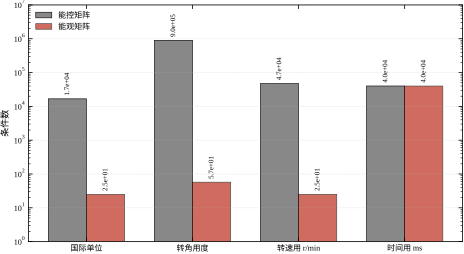
容差不是系统的参数，却直接决定结论。对 b=10^{-6} 的对象，取 \tau=10^{-12}、10^{-10}、10^{-8} 都判满秩，取 \tau=10^{-6}、10^{-4} 判亏秩。同一个模型、同一份数据，结论相反。表 51-13 是实测。
| 相对容差 \tau | 判定秩 |
|---|---|
| 10^{-12} | 3 |
| 10^{-10} | 3 |
| 10^{-8} | 3 |
| 10^{-6} | 2 |
| 10^{-4} | 2 |
表 51-13 给出的教训是：容差必须与模型精度匹配。模型参数有 1% 误差，却用 10^{-12} 判秩，等于宣称自己知道小数点后十二位，这是不诚实的。反过来，模型来自高精度有限元，用 10^{-2} 判秩又会漏掉真实的结构信息。合理的做法是根据参数不确定度定容差，并在报告里写明。
采样周期对离散判据的影响是非单调的：大部分 T_s 下秩保持不变，在 \pi/\omega 的奇数倍附近突然掉秩，在 2\pi/\omega 处最彻底。§51.5 已经给出完整数据，这里只补一条方向性结论：T_s 越大，离散系统越容易失守；但“越小越好”也不成立，因为 T_s 太小会让 \Phi 接近单位阵，能控矩阵的各列趋于共线，条件数变差。工程上取 \omega_{\max}T_s\approx0.05 到 0.2 之间，兼顾条件数与计算量。
表 51-14 把本节的方向性结论汇总，供设计时查阅。
| 参数 | 增大时对能控性的影响 | 增大时对能观性的影响 | 量级 |
|---|---|---|---|
| 耦合系数 b | 单调变好 | 无直接影响 | 能量按 b^{-2} |
| 耦合系数 c | 无直接影响 | 单调变好 | 噪声按 c^{-2} |
| 执行器数量 | 秩只增不减 | 无影响 | 补齐秩为质变 |
| 传感器数量 | 无影响 | 秩只增不减 | 冗余可能恶化条件数 |
| 状态量纲 | 秩不变 | 秩不变 | 条件数可差 10^{3} |
| 判定容差 \tau | 越大越易判亏秩 | 同左 | 跨越真实奇异值时翻转 |
| 采样周期 T_s | 非单调，\pi/\omega 附近掉秩 | 同左 | 掉秩是突变 |
表 51-14 的读法是“先看方向，再看量级”。方向决定该动哪个旋钮，量级决定动了以后值不值得。两者都清楚，才谈得上设计。
前面一直在谈耦合系数，其实模态本身的快慢也决定 Gramian 的大小。对最简单的一阶模态 \dot{x}=-ax+bu，Lyapunov 方程 AW_c+W_cA^{\mathsf T}+BB^{\mathsf T}=0 可以手解：
W_c=\frac{b^{2}}{2a},\qquad W_o=\frac{c^{2}}{2a} \tag{51-37}
式 (51-37) 说的是：a 越大（模态越快），W_c 与 W_o 越小。物理上不难理解：快模态在很短的时间里就把输入的影响“耗散”掉了，积分累积不起来，所以既难推动也难看清。
这条规律与本章电机的实测一致。三个模态的衰减率分别是 47.35、2.90、0（积分器），能观 PBH 值依次是 9.9\times10^{-3}、0.307、1.0，与 1/a 大致成反比：1/47.35 对 1/2.90 相差 16 倍，实测相差 31 倍。差别来自各模态在输出上的参与系数不同，但趋势是清楚的。同一台设备上，最快的模态往往是能观性最弱的模态，这也是电流估计比转速估计难做的原因。
阻尼的作用要分开说。对二阶模态 \ddot{x}+2\zeta\omega_n\dot{x}+\omega_n^{2}x=bu，能控 Gramian 的对角元量级为 b^{2}/(4\zeta\omega_n)。\zeta 越小，Gramian 越大，说明轻阻尼模态很容易被激励起来——这既是“好控”，也是“容易振荡”的同一个硬币的两面。\zeta 越大，Gramian 越小，推动它需要更多能量，但同时它本身也不容易振。选型时不能只说“阻尼大好”或“阻尼小好”，要看目标是快速跟踪还是抑制振荡。
还有一条边界要记住：式 (51-37) 要求 a>0。若 a=0（积分器）或 a<0（不稳定模态），Lyapunov 方程没有有限解，Gramian 不存在。这不是数学上的小瑕疵，而是工程上的事实：积分器“记得住”输入的全部历史，能量需求可以无限累积；不稳定模态在无限时域上的能量积分发散。遇到这类模态，只能用有限时域 Gramian W_c(T)，或者改用 §51.6 的可镇定判据，而不能套用无穷时域的结论。
§51.7.7 是从对象推指标，工程上更常见的是反过来：给定精度要求，问能观性够不够。这一步可以算得很具体。
设测量噪声标准差为 \sigma_n，要求某方向的估计误差不超过 \varepsilon。观测器在该方向上的误差方差约为 \sigma_n^{2}/\lambda_{\min}(W_o)，于是要求
\lambda_{\min}(W_o)\ \ge\ \left(\frac{\sigma_n}{\varepsilon}\right)^{2} \tag{51-38}
式 (51-38) 把“精度”翻译成了“Gramian 下界”，再与实测的 W_o 一比，就知道够不够。
拿参数化对象验算。它 W_o 的最小奇异值是 8.43\times10^{-4}，对应 \lambda_{\min}^{-1/2}=34.4，也就是 §51.6.2 那个 34 倍。反过来说，若允许的放大倍数是 34，式 (51-38) 给出的下界是 1/34^{2}=8.65\times10^{-4}，与实测的 8.43\times10^{-4} 几乎重合——这个对象恰好坐在“34 倍”这条线上。若把精度要求提高一倍（允许放大 17 倍），下界就变成 3.46\times10^{-3}，实测值不够，必须降噪或改结构。
三条改进路径由此变得很清楚。降噪：把 \sigma_n 减半，允许的 \lambda_{\min} 降为四分之一，这是最便宜的路径，加屏蔽、加滤波、换更高分辨率编码器都属于这一类。改结构：提高 \lambda_{\min}，靠加测点或改安装位置，成本中等。改模型：把弱方向从控制目标里剔除，用降阶模型设计控制器，成本最低但要接受该方向不能控。
现场最常犯的错误是三条都不做，只在软件里加大观测器增益。增益加大确实能让估计误差在仿真里变小，但真实噪声被同比例放大，最终表现是估计值抖动加剧、执行器发热、机械磨损加快。式 (51-38) 的作用就是把这种“看起来很努力”的做法挡在门外。
表 51-14 是单因素表，每次只动一个量。实际改款往往同时动好几个，效果不是简单叠加。
最典型的是耦合两端同时退化。参数化对象里 b 管输入侧、c 管输出侧，若结构改款让两者都减半（例如联轴器变软、传感器安装位置偏移），能控 Gramian 按 b^{2} 降为四分之一，能观 Gramian 按 c^{2} 降为四分之一，而 Hankel 奇异值按两者的几何平均走，降为四分之一。看起来只是“各降一半”，实际对最小实现的削弱是四倍，比单看任何一侧都严重。这就是为什么改款评估不能只查一侧。
第二个交互是缩放与采样。快采样让条件数按 T_s^{-2} 上升，不良缩放让条件数按 \kappa(T) 上升，两者相乘。若转角用度、采样又取到 100 μs，条件数可能从 10^{4} 一路涨到 10^{8}，此时双精度下也算不准了。单独查任何一项都发现不了这个问题，必须联合扫描。
第三个交互是幅值与耦合。能量按 x_f^{2}/b^{2} 变化，行程加倍、耦合减半，能量就是原来的 16 倍。这个组合在改款中很常见——为了覆盖更大行程换了更软的传动，两件事同时发生，需求一下跳出电源能力。
这三条合起来说明：表 51-14 只适合定性判断“往哪个方向动”，定量结论必须用实际参数组合跑一遍。脚本的 report_param 就是为了这件事准备的，把循环变量改成实际的两个参数，跑一次就能看到联合效果。
前面几张表回答“参数变大了会怎样”，工程上还有一个更直接的问题：手上有六个参数，辨识预算有限，先标哪一个？答案可以用一次数值扰动算出来。把每个参数单独加 1%，看四个指标各变多少，归一化之后就是敏感度。
表 51-15 是本章电机的实测结果，数值为“参数变 1% 时指标变化的百分比”，由脚本的 report_sensitivity() 生成。
| 参数 | \sigma_{\min}(\mathcal{C}) | \mathrm{cond}(\mathcal{C}) | \sigma_{\min}(\mathcal{O}) | \mathrm{cond}(\mathcal{O}) |
|---|---|---|---|---|
| R | -0.258 | +2.134 | 0 | 0 |
| L | -0.025 | -2.742 | 0 | 0 |
| K_e | -0.713 | +0.677 | 0 | 0 |
| K_t | +0.256 | -0.078 | 0 | +1.000 |
| J | -0.187 | +0.011 | 0 | -0.990 |
| b | -0.072 | +0.073 | 0 | 0 |
能观侧那一列的两个零值得停一下。它们不是“很小”，而是小于 5\times10^{-4}，在四位小数下看不出来。也就是说，反电动势常数、电阻、电感、粘滞阻尼这四个参数，对“从转角能不能看清三个状态”几乎没有影响。原因在观测链上：从转角出发，先看到转速，再看到由 K_t/J 决定的加速度，链条到电流就结束了；K_e 只出现在“转速反过来影响电流”的方向，而这一环不在观测路径上。能观条件数那 25 倍，完全由 K_t 与 J 的时间尺度比决定，两者的敏感度恰好是 \pm1.000 与 \mp0.990，接近 1:1。
能控侧则是另一幅图景。\sigma_{\min}(\mathcal{C}) 对 K_e 最敏感（1% 引起 0.71%），其次是 R（0.26%）与 K_t（0.26%），最不敏感的是 L（0.03%）——尽管 L 直接决定 B 的大小。这个反差有明确的解释：\sigma_{\min} 衡量的是三个列方向的“拉开程度”，L 只整体缩放 B，不改变方向结构；K_e 改变 A 的元素，从而改变列与列之间的夹角。条件数却对 L 最敏感（2.74%），因为它同时改变 B 的尺度与电气极点。
实践结论只有一句：标定预算按敏感度分配。 要保证能控侧结论可信，K_e 的误差要控得最严，R、K_t、J 次之；L 的精度要求反而最低。要改善能观性，靠辨识参数没有用，只能改测点或改采样。至于 b，它对四个指标的影响都在 0.1% 以内，花大力气辨识它对判据毫无帮助——它只影响稳态增益与阻尼，不属于本章的判据范畴。
最后提醒一句适用条件：表 51-15 是局部敏感度，来自 1% 的小扰动。参数变化到 10% 以上时，非线性项会显现，排序可能改变，必须重新扫描，不能把这张表外推。
用在自己的对象上只需改两处：把 base 换成实际参数表，把 metrics 换成要跟踪的指标（\sigma_{\min}、条件数、Hankel 奇异值都可以）。扰动幅度取 1%，是因为它小到不改变秩、又大到不会被舍入误差淹没；取 0.1% 时能观侧的变化已经接近双精度的相对分辨率，打印出来全是噪声。敏感度排序也只对当前工作点有效，换工况要重跑，这与 §51.6.9 的 Weyl 估计是同一个道理。
本章没有控制器参数可调，“调参”指的是调检查方法：怎么归一化、怎么定容差、怎么配测点、怎么选采样周期。这些选择不改变系统，却决定你看到的结论是否可信。下面七条按执行顺序排列。
拿到 (A,B,C) 的第一件事不是算秩，而是把每个状态除以它的额定值或允许偏差。归一化之后，所有状态在正常工况下量级接近 1，奇异值谱才有可比性。
归一化的效果可以直接量出来。§51.7 表 51-12 里，转角从弧度换成度，条件数涨了 54 倍；时间从秒换成毫秒，能观条件数涨了 1600 倍。这两个操作都没有改变系统，只是换了尺子。不归一化就报条件数，等于报的是尺子的刻度，不是系统的性质。
行列式只回答“是否为零”，奇异值谱回答“每个方向有多强”。做一次 SVD，把 \sigma_1,\dots,\sigma_n 全部打出来，看一眼比值，比盯一个行列式有用得多。
具体的判读方法是：\sigma_i/\sigma_1 跨三个数量级以内，说明各方向比较均衡；跨三到六个数量级，说明有弱方向，需要关注；跨六个数量级以上，基本可以认为该方向在工程精度内不可用。这个分档不是定理，是从本章电机与参数化对象的实测中归纳出来的经验线。
特征值按实部从大到小排。先查实部最大的（最不稳定），再查实部最接近零的（最慢）。这两类模态出问题，后果最严重：前者直接导致发散，后者导致长时间漂移、积分饱和。
快模态出问题反而可以缓一缓，因为它衰减快，即使控制不好也只影响暂态。这个优先级与第 54 章极点配置的顺序一致：先保证不稳定模态被拉回来，再考虑慢模态的动态。
同样是秩亏，处理方式完全不同。判断办法很简单：把模型参数各扰动 \pm1\%，重算秩与奇异值。
若秩在扰动后翻转，说明是数值性失守，真实系统接近但未达到奇异，应该改进缩放或提高模型精度；若秩在所有扰动下都亏，说明是结构性失守，必须改硬件或改模型。这个 ±1% 扰动测试只要几行代码，却能把两类问题分开，避免在数值问题上白改机械结构，也避免在结构问题上反复调容差。
选传感器位置时，先算失守模态的左特征向量，找绝对值最大的分量，把测点放在那个状态附近。这是最省事也最有效的启发式。
反例来自本章电机：仅测转速时转角不能观，因为转角从来没有进入输出方程。若工艺要求必须用测速机，就必须额外加一个零位开关，给转角一个绝对基准。仅测电流时同理，机械状态全部不能观。
另一个经验是“不要只测导数”。转速是转角的导数，加速度是转速的导数，纯导数信号丢掉了常数项，必然丢失绝对位置。要恢复绝对量，必须有一个直接测量绝对量的通道，或者一个已知的初始条件。
先在频域里找 \omega_{\max}，按 \omega_{\max}T_s\approx0.05 到 0.2 取初值，然后跑一次离散秩判据与 PBH。若发现某个 T_s 附近秩下降，就往远离 \pi/\omega 的方向挪。
这条顺序不能颠倒。先定 T_s 再找 \omega_{\max}，往往会为了算力把 T_s 取得过大，等到发现秩掉了再改，控制器结构、代码周期、通信配置都要跟着动。
改了执行器、换了传感器、改了单位、改了采样周期，都必须把 §51.3 的七步重跑一遍。能控性对参数是敏感的，尤其是接近奇异的设计，一点点改动就可能让秩翻转。
表 51-16 把常见的症状、原因与动作列在一起，可作为现场排查的索引。
| 症状 | 可能原因 | 动作 |
|---|---|---|
| 秩满但极点配置增益巨大 | 条件数过大 | 归一化、换测点、改耦合 |
| 某模态怎么调都不动 | 结构性不能控 | 查左特征向量、加执行器 |
| 观测器估计长期漂移 | 该方向不能观或弱能观 | 加绝对基准、改测点 |
| 换单位后结论反转 | 未归一化 | 归一化后重算并报容差 |
| 采样后突然失稳 | 病态采样 | 改 T_s、加抗混叠滤波 |
| 加传感器后估计变差 | 测点冗余、行近共线 | 取最小测点集、正交化 |
| 小信号正常、大信号失控 | 执行器饱和，能控性弱 | 看 Gramian 能量需求 |
表 51-16 的每一行都对应本章前面的一个数字，读者可以按行回查，不必凭记忆判断。
现场做检查时，最容易漏的不是难的步骤，而是“以为已经做过”的步骤。表 51-17 是一份可以直接打印的清单，十项，每项都有明确的输出物。全部填完，才算检查完成。
| 序号 | 检查项 | 输出物 | 通过标准 |
|---|---|---|---|
| 1 | 模型来源与工作点 | 一行说明 | 与控制器设计的工况一致 |
| 2 | 单位与归一化 | 缩放因子表 | 各状态量级在 10 倍以内 |
| 3 | 相对容差 | \tau 的取值与理由 | 与模型精度匹配 |
| 4 | 能控秩与 \mathcal{C} 的奇异值谱 | 谱图或数列 | \sigma_{\min}/\sigma_1>\tau |
| 5 | 能观秩与 \mathcal{O} 的奇异值谱 | 谱图或数列 | 同上 |
| 6 | 逐模态 PBH | 表：\lambda_i、两个 \sigma_{\min} | 不稳定模态不为零 |
| 7 | Hankel 秩 | 一个整数 | 与最小实现阶次一致 |
| 8 | Gramian 与最小能量 | 能量数值 | 折算电压后不超过电源能力 |
| 9 | 采样周期核对 | \omega_{\max}T_s 与离散秩 | 落在 0.05–0.2，秩不降 |
| 10 | 传感器与执行器配置 | 组合与条件数 | 最小独立集，条件数可接受 |
清单的价值在于防漏。十项里任何一项缺失，结论都可能翻转；而十项全部做完，通常只需要把 §51.12 的脚本改几行。检查的成本远低于返工的成本，这是本章最朴素的一条建议。
第一例：结论随尺子变。某设备用 numpy.linalg.matrix_rank 的默认参数判秩，得到满秩；同一份数据交给另一套软件，得到亏秩。双方争论了很久，最后发现是容差不同：默认容差按最大奇异值与机器精度算，换一套库、换一个版本、换一组单位，门限就变了。修法很简单——显式给出相对容差，并在报告里写明。这类争论一次都不该发生。
第二例：加传感器反而变差。某转台原本只测转角，位置环表现稳定；为了“提高可靠性”加装了测速机，改用转速与转角做观测器，结果估计噪声明显变大。原因不是测速机坏了，而是两路信号近似线性相关，能观矩阵的条件数从 25.0 涨到 1.26\times10^{3}，放大了 50 倍。修法是把测速机留给故障诊断，不参与常规观测器，也就是回到“最小独立测点集”。
第三例：连续设计、离散发散。控制器按连续模型设计，观测器极点放在 -20，理论上收敛很快；实机采样周期取 3.14 s（一台慢速热工设备），结果估计值剧烈振荡。查下来，采样周期正好落在对象振荡周期的半周期附近，离散系统的能观矩阵几乎奇异。修法是把 T_s 挪到 0.5 s，同时按式 (51-30) 复核离散 PBH。
三例的共同点是：都不是控制器算法错了，而是检查环节缺了一项。第一例缺容差，第二例缺条件数，第三例缺离散核对。这也解释了为什么本章把大量篇幅放在“怎么检查”而不是“怎么设计”上——设计公式在教科书里都有，检查方法却要靠经验积累。
检查不是做一次就完事，但也不需要天天做。按事件触发最合理，有五种情况必须重跑。
第一种，机械改动。换了联轴器、改了传动比、加了配重、调整了安装刚度，A 就变了。这类改动最容易被忽视，因为它“看起来没动控制系统”。
第二种，电气改动。换电机、换驱动器、改电源电压、改电流环带宽，B 与 A 都变。尤其是电流环带宽，它直接改变外环看到的对象。
第三种，传感器改动。换编码器、改分辨率、挪安装位置、加装测速机或电流传感器，C 变。这一类的影响在 §51.4.5 已经有实测，加一个测点就可能把条件数拉坏。
第四种，软件与工具链改动。换控制系统版本、换数值库、换编译器优化等级，矩阵运算的舍入行为可能改变；在接近奇异的模型上，结论可能翻转。这类改动最难排查，因为代码一行没改。
第五种，工作点改变。线性化点挪了，A 就不一样。多工况设备必须在每个工况各跑一次，不能拿额定点的结论覆盖全程。
五种触发条件可以写进开发流程：任一项发生时，流水线自动跑一次 §51.12 的脚本，把结果贴进变更记录。这样做的成本很低，收益是把“改完才发现控不住”变成“提交时就知道”。
如果检查发现条件数不理想，改进手段分四层：改结构、改测点、改数值、改控制器。四层的代价依次降低，效果也依次降低，应该按这个顺序尝试，而不是一上来就调控制器。
最彻底也最贵。加一路执行器、把传感器从“只能测导数”的位置挪到“能测绝对量”的位置、改机械耦合让原本断开的链路接通。本章电机的例子很典型：只测转速时缺的是转角，加一个零位开关就能把秩从 2 补到 3，成本远低于换一套控制系统。
结构改进的判断依据是左特征向量。哪个状态在失守模态里占的权重大，就在哪个状态上加测点或执行器。盲目加测点，可能只是增加冗余，反而把条件数拉坏（表 51-8）。
在已有传感器里重新组合，往往能得到更好的条件数。本章电机的六种配置里，仅转角的条件数是 25.0，三者全测反而涨到 2702。这说明“最小独立测点集”通常比“全测”更好用。
具体做法：把所有可用测点列出，按“补齐秩”为目标做贪心选择，每加一个测点就算一次条件数，选条件数最小的组合。这个搜索空间很小（p 个测点最多 2^{p} 种组合），穷举即可。
数值改进不改变系统，只改变计算方式，成本最低。
第一是缩放。把状态、输入、输出都折算到可比量级，再做秩分解。这一步在 §51.8 已经讲过，效果显著。
第二是换判据。不要用行列式，改用 PBH 的 \sigma_{\min}；不要用 matrix_rank 的默认容差，改用显式的相对容差。
第三是避免构造完整能控矩阵。n 较大时，\mathcal{C} 的内存是 O(n^2m)，做一次 SVD 是 O(n^3m)。此时应改用 PBH（每个特征值一次 n\times(n+m) 的 SVD），或者用 Krylov 子空间迭代求最小奇异值。
第四是平衡实现。用相似变换把能控 Gramian 与能观 Gramian 同时对角化，得到平衡坐标；在平衡坐标下，弱方向一眼可见，降阶也有明确依据。这一步在第 57 章的模型降阶里会再用到。
如果某个模态既弱能控又弱可观，它对输入输出几乎没有贡献，可以直接从模型里删掉。做法是对 Hankel 矩阵做 SVD，保留前 r 个奇异值对应的子空间：
H=U\Sigma V^{\mathsf T},\qquad H_r=U_r\Sigma_rV_r^{\mathsf T} \tag{51-39}
\Sigma 的奇异值衰减越快，降阶越安全。本章参数化对象在 b=c=0 时 Hankel 秩为 2，直接降到二阶不会损失任何输入输出信息。若奇异值缓慢衰减，降阶就要谨慎，因为被删掉的模态虽然弱，但可能在特定频段被激励。
降阶的工程意义不只是省算力。一个三阶模型降到二阶，极点配置、观测器设计、代码实现都简化一档，现场调试的沟通成本也降低。但降阶必须留下记录：删掉了哪个模态、它的阻尼比是多少、在什么工况下可能被激励。第 57 章的模型降阶会给出完整的误差界。
图 51-4 左图是 T=1 s 内可达集在 (x_1,x_3) 平面上的投影。b=1 时是一个有面积的椭圆，b=0.1 时在 x_3 方向被压扁到十分之一，b=0 时退化成一条线段——第三方向完全不可达。右图是同一输入下 x_3 的时间响应：b=1 时跟着输入起伏，b=0.1 时幅度只有十分之一，b=0 时恒为零。
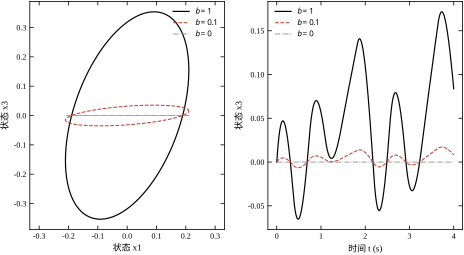
这张图把“改进”变成了可比较的面积。把执行器换大一号、把耦合杆加粗一级，都可以折算成椭圆在某方向上的半轴变长多少；半轴长度与 \sqrt{\lambda_i(W_c)} 成正比，而能量与半轴平方成反比。设计评审时拿这张图说话，比争论“够不够”具体得多。
把四层手段按“代价／收益”排序，得到一条实用优先级：先看结构是否断链（改结构），再看测点是否冗余（改组合），再看数值是否被单位拖坏（改缩放），最后才考虑降阶或换控制器。这条顺序与 §51.3 的七步一致：结构问题在第六步判定，数值问题在第三步处理，两者不能混为一谈。
还有一个常被忽略的改进：把检查本身自动化。把 §51.3 的七步写成一个脚本，每次模型更新自动跑一遍，把秩、\sigma_{\min}、条件数写进构建日志。这样结构退化会在提交时暴露，而不是在联调时暴露。
前面提到的“平衡实现”，具体做法只有三步。
第一步，解两个 Lyapunov 方程，得到 W_c 与 W_o。第二步，对 W_cW_o 做特征分解，特征值开方得到 Hankel 奇异值 \sigma_1\ge\sigma_2\ge\cdots\ge\sigma_n。第三步，用这个分解构造相似变换 T，使新坐标下
\hat{W}_c=\hat{W}_o=\mathrm{diag}(\sigma_1,\dots,\sigma_n) \tag{51-40}
在平衡坐标下，每个状态“被推动的容易程度”与“被看清的容易程度”相等，都等于它的 Hankel 奇异值。强模态与弱模态不再混在一起，一眼就能分开。
平衡坐标最大的用处是给出降阶的误差界。若保留前 r 个 Hankel 奇异值、删掉其余，则对稳定系统
\|G-G_r\|_{\infty}\le 2\sum_{i=r+1}^{n}\sigma_i \tag{51-41}
式 (51-41) 是平衡截断的核心结论，它把“删了多少”直接换算成“频率响应最多差多少”。本章参数化对象在 b=c=0 时第三个 Hankel 奇异值为零，删掉它误差界为零，与 Hankel 秩 2 的结论一致。若第三个奇异值只是很小而不为零，误差界就是它的两倍，工程师可以据此判断“这点误差能不能接受”。
数值上有一点要注意：W_cW_o 通常不是对称矩阵，直接调特征分解可能得到复数。稳妥做法是先做 Cholesky 分解 W_c=LL^{\mathsf T}，再对 L^{\mathsf T}W_oL 做对称特征分解，最后回代。这样全程只碰对称正定矩阵，数值上稳定得多。
改进做完，必须能说清“好了多少”，否则无法向评审交代，也无法判断是否值得继续投入。三个口径最常用。
第一个是 \sigma_{\min} 的提升倍数。这是最直接的，因为增益、能量、噪声放大都按它的幂次变化。缩放把条件数从 1.674\times10^{4} 降到另一个量级时，若 \sigma_{\min} 提高 k 倍，最小能量大致降 k^{2} 倍，极点配置所需增益大致降 k 倍。
第二个是能量需求的下降倍数。它对应真实成本：电源选型、散热设计、执行器规格都跟着它走。但要注意，数值改进不改变物理能量。把转角从度换成弧度，条件数降 54 倍，可物理上推动转台所需的能量一点没变。数值改进改善的是“算得准不准”，结构改进才改变“推得动推不动”。两者不能混着报。
第三个是误差界的收紧。降阶之后用式 (51-41) 算出频率响应的最大偏差，与工艺允许的偏差一比，就知道降阶是否安全。这个口径在模型交付时最有用，因为它给的是最坏情况，而不是平均情况。
三个口径合起来，可以写成一句汇报用语：结构改动使能量需求从多少降到多少；数值改动使条件数从多少降到多少；降阶使频率响应偏差不超过多少。 三句话各说一件事，不互相替代，评审时也最容易被接受。
降阶不是终点，降完要复核三项，缺一项都可能出问题。
第一项是秩。降阶后的模型必须仍然满秩，否则等于把能控性一起删掉了。核对方法很简单：对新模型重跑秩判据与 PBH。若某个 Hankel 奇异值很小的模态被删掉后，剩下的模态反而亏秩，说明删错了——通常是删掉了强耦合链上的中间环节。
第二项是频响误差。用式 (51-41) 算出的界是保守的，实际误差通常更小。更直观的做法是在关心的频段上比较两个模型的幅频特性，看最大偏差出现在哪里。若偏差集中在闭环带宽内，即使全局误差界合格，也不能用；若偏差在带宽外，影响有限。
第三项是闭环性能。开环误差小，闭环不一定好，因为反馈会放大某些频段的差异。稳妥做法是用降阶模型重新设计控制器，再用原模型闭环仿真，比较阶跃响应与稳定裕度。两者差距明显，说明降阶模型不能用于该控制器设计。
三项复核做完，还要在文档里写清一件事：降阶模型不能用于能观性结论。降阶过程中已经删掉了弱能观模态，用降阶模型再算能观性，必然满秩，但这个“满秩”是删除的结果，不是系统的性质。能观性结论必须用原始模型算，这一条在评审时经常被问，值得单独记一笔。
本节把前面的判据落到三件事上：模型从哪来、传感器怎么配、现场怎么验证。三件事都做完，能控性与能观性才算真正“检查过”，而不是在仿真里“看过”。
工程上的 (A,B,C) 通常有三个来源，各有各的坑。
第一个来源是机理建模加线性化。优点是物理意义清楚，缺点是工作点一旦偏离，A 就变了。落地时必须写明线性化点，并在多个工作点各查一次秩。若某个工作点秩下降，说明该工况下结构退化，控制器要降级或切换。
第二个来源是辨识。第 20、21 章会讲子空间辨识与闭环辨识，它们直接给出离散状态空间。这里只提醒一件事：辨识出的模型阶次是“输入输出意义上”的最小阶次，不等于物理阶次。若物理上有一个不能控模态，辨识结果里根本不会有它，于是你会误以为系统满秩。辨识之前必须先做机理分析，知道哪些模态可能存在而数据看不见。
第三个来源是商业软件导出的线性模型。这类模型常常带着大量“数值模态”（极点与零点几乎对消），直接算秩会得到很高的阶次。落地前应先做 Hankel 降阶，把数值模态清掉，再查秩。
还有一个共同问题：延迟。纯延迟在状态空间里是无穷维的，工程上常用 Padé 近似把它变成有限维。Padé 会引入非最小相位零点，这些零点与极点接近对消时，秩判据会给出误导性的结论。涉及延迟的回路，建议先看第 47 章的 Smith 预估结构，再决定是否把延迟纳入状态空间。
配置流程可以固化成四步。
第一步，列出所有可用的执行器与传感器，标注它们的量程、带宽、分辨率。第二步，按“补齐秩”的目标做最小集选择，本章电机的结论是：一路电压足够，一路转角足够，转速与电流属于可选冗余。第三步，对每个候选组合算条件数，选条件数最小且满足工艺要求的那个。第四步，把选择结果与理由写进设计文档，特别是“为什么不多装一个”。
以本章电机为例。编码器 2500 线、四倍频后每转 10000 个脉冲，角度分辨率 2\pi/10000=6.28\times10^{-4} rad。按能观矩阵条件数 25 折算，最弱方向上的等效误差量级约为 1.6\times10^{-2}。这个数对电流估计来说偏大，说明单靠转角反算电流的精度有限；若工艺要求电流估计误差小于 1%，就必须加电流传感器，而不是靠观测器硬算。
执行器侧同理。PWM 频率必须远高于电气模态 -47.3 rad/s（约 7.5 Hz），通常取 10 kHz 以上，使电流环在一个开关周期内就能完成调节。若为了省钱把 PWM 降到 1 kHz，电流环带宽被压到几百赫兹，电气模态实际上变成“不能控”，§51.4 的满秩结论就失效了。秩是在模型里算的，带宽是在硬件上保证的，两者必须对齐。
把检查写成代码时，建议遵守四条规范。
第一，入口统一做无量纲化，缩放因子写进配置文件，不写死在代码里。第二，所有秩判定显式传容差，容差由模型精度推出，并在输出里打印。第三，每个模态都打印 \sigma_{\min}，不要只打印总秩。第四，把结果写成结构化日志（章、时间、模型版本、秩、\sigma_{\min}、条件数），便于跨版本对比。
四条规范的价值在变更管理。控制器换代、传感器换型、机械改款，只要模型跟着更新，日志就能告诉你“这次改动让哪个模态变弱了”。没有日志，只能靠回忆；有日志，可以追溯到具体某一次提交。
代码实现上有两个细节值得注意。其一，numpy.linalg.matrix_rank 的默认容差基于最大奇异值与机器精度，量纲一变结论就变，所以不要依赖默认值。其二，求 PBH 的最小奇异值时，若 \lambda 是复数，矩阵是复的，SVD 仍然可用，但要注意把共轭对只算一次，避免重复报错。
前面所有结论都建立在模型上。模型对不对，只能在设备上验。有三项实验成本很低，却能直接把“纸面上的能控能观”变成“实测的能控能观”。
第一项是静态增益核对。给一个已知的直流输入，等系统稳定，测输出。对本章电机，输入 u\to\omega 的直流增益可以手算：
\frac{\omega}{u}\bigg|_{s=0}=\frac{K_t}{Rb+K_tK_e} =\frac{0.05}{0.5\times5\times10^{-4}+0.05\times0.05} =18.18\ \mathrm{rad/s\cdot V^{-1}} \tag{51-42}
给 1 V，稳态转速应当是 18.2 rad/s，约 174 r/min。实测偏差超过 10%，说明 B 或 C 的标度写错了，后面算出的秩也不可信。转角通道含积分器，直流增益无穷大，不能用稳态值核对，只能看斜坡输入下的斜率，斜率同样应当等于 18.18 rad/s 每伏。
第二项是逐通道响应核对。单独驱动每一路输入（多输入系统要逐路做），记录哪些状态有响应、响应多快。这一步验的是 B 的结构：B 的哪一行非零，哪一路输入就能直接推动哪个状态。若某状态在所有输入下都没有响应，模型里它很可能已经被写成不能控，此时先别急着改控制器，先确认是不是建模时漏了一条通路。
第三项是观测器残差检查。用实测数据跑一遍观测器，看残差 y-C\hat{x} 是否趋于零、是否呈现白噪声特性。若残差在某个方向上持续偏置、不衰减，说明该方向不能观或弱能观——这与 PBH 的结论应当对应。这一步最有价值，因为它不需要另做实验，用正常运行的数据就能做，而且直接暴露“模型说能观、实际看不清”的矛盾。
三项做完，可以把实测结论与 §51.12 的脚本输出并排放。两者一致，模型可信；两者不一致，先查模型，不要急着调控制器。这个顺序在联调阶段能省掉大量来回。
本章的结论会被后面几章反复引用，这里把接口一次说清，避免读者到后面再回头找。
第 52 章讲 Lyapunov 稳定性，会解形如 A^{\mathsf T}P+PA=-Q 的方程。本章的式 (51-11)、(51-13) 就是它的特例：把 Q 取成 BB^{\mathsf T} 或 C^{\mathsf T}C，解出来的 P 就是 Gramian。第 52 章不再重复推导，只把它当作稳定性判据用。
第 54 章讲极点配置与观测器。它的前提就是本章的式 (51-4) 与式 (51-5)：能控才能任意配置极点，能观才能任意配置观测器极点。表 51-11 那张四概念边界表，到第 54 章会变成“哪些极点能配、哪些不能配”的具体判断。
第 55 章讲 LQR。它只要求可镇定，不要求完全能控；但 Riccati 方程的可解性与数值条件，与本章的 \sigma_{\min} 直接相关。弱能控模态会让 Riccati 方程接近奇异，解出来的增益巨大。
第 56 章讲卡尔曼滤波。它要求可检测，噪声协方差的设计与本章的式 (51-38) 是同一件事的两个方向：一个从噪声推精度，一个从精度推噪声。第 56 章还会用到能观 Gramian 的离散版本式 (51-16)。
第 57 章讲模型降阶，直接使用本章的 Hankel 秩与平衡实现（式 (51-40)、(51-41)）。本章只给出概念与误差界，具体的算法与数值细节留给第 57 章。
与第 44 章 PID 的边界要说清楚：PID 属于输出反馈，设计时不需要能控性判据，但它能达到的性能上限受本章的能观性约束。本章不讨论 PID 整定，也不讨论“用 PID 能不能代替状态反馈”，这些问题在第 44 章与第 58 章（MPC）中处理。与第 47 章 Smith 预估的边界同理：延迟的处理在第 47 章，本章只提醒 Padé 近似会引入假模态。
本章的例子都是单输入单输出、三阶。真实设备往往有好几个轴，每个轴又有自己的状态。这时判据怎么用？
最省事的做法是分轴建模、分轴检查。把每个轴的三阶模型拼成块对角形式，A=\mathrm{diag}(A_1,A_2)，整体能控矩阵也是块对角的，秩等于各轴秩之和。只要每轴满秩，整体就满秩；只要每轴可镇定，整体就可镇定。分轴检查的好处是结论清楚，出问题时知道是哪个轴。
问题出在耦合上。两个轴通过机械结构连在一起，A 的非对角块不为零，整体不再是块对角。此时能不能继续用分轴结论，取决于耦合的强弱。一个可用的判据是比较耦合项与主轴最小奇异值：
\|A_{\mathrm{off}}\|\ \ll\ \sigma_{\min}(\mathcal{C}_i) \tag{51-43}
左边是耦合块的范数，右边是该轴能控矩阵的最小奇异值。左边远小于右边，说明耦合不足以改变该轴的可控结构，分轴结论可用；两者同量级或更大，就必须联合建模，此时会出现分轴模型里没有的耦合模态。
举一个具体的量级。两轴转台，每轴三阶，耦合刚度对应的非对角项约 1；单轴的 \sigma_{\min} 是 16.05（与本章电机同量级）。1\ll16.05，分轴可用。若为了减重把结构做软，耦合项涨到 50，比 \sigma_{\min} 还大，分轴结论立刻失效——这时两个轴必须一起观测、一起控制，否则会出现“单轴调得很好、联机就振”的现象。
工程上的稳妥做法是两步：先分轴算一遍，拿到每轴的秩与条件数；再把耦合项加进去联合算一遍，比较两者的结论。若一致，按分轴设计，简单可靠；若不一致，以联合结论为准，并检查是哪个耦合模态出了问题。只做第一步就下结论，是多轴系统最常见的失误。
检查发现问题后，改什么、按什么顺序改，直接决定投入产出。这里给一条按成本从低到高的决策顺序，与 §51.9 的四层手段对应，但更强调“什么情况下可以直接跳过前面几层”。
若秩亏且失守模态不稳定，直接跳到改结构。这一类问题调控制器完全无效，先改硬件再谈其他。判断依据是 §51.3 第六步。
若秩满但能量需求超出电源能力，选择有两条：改执行器（提高电压、加大耦合），或者降低指标（缩短行程、放慢节拍）。前者是硬件投入，后者是需求让步，两者都比在算法上挣扎有效。
若秩满、能量够，但噪声放大严重，先降噪再改结构。降噪的代价通常最低：加屏蔽、加滤波、换高分辨率编码器、把传感器挪到信号更强的地方，这些手段都不动机械。降噪之后仍不够，再考虑加测点。
若三项都合格，只是条件数偏高，那就做数值改进：归一化、显式容差、换判据。这一步几乎不花钱，而且收益立竿见影——本章电机的条件数因为单位选择差了 54 倍，改回来只需要在入口乘一个对角阵。
顺序背后是一条朴素的判断：能靠软件解决的不要动硬件，能靠改配置解决的不要改结构，必须改结构时不要犹豫。 前两句防止过度设计，第三句防止在不能控的系统上反复调参。三条合起来，就是本章反复强调的“先分清结构问题与参数问题”。
还有一条兜底策略常被忽略：三项指标都不理想、而硬件与预算又都动不了时，可以降低性能指标本身。把闭环带宽从设计值降一档、把节拍放慢、把行程缩短，都能让弱模态重新落回可用区间。这是设计自由度，不是妥协——指标是为人服务的，不是反过来。把它写进记录，比在控制器里硬撑更诚实，也更容易在评审时被接受。
检查做完，要留下一份记录。记录不是给检查者自己看的，而是给三个月后的接手人、给评审、给下一次改款用的。表 51-18 是一份最小可用的字段清单。
| 字段 | 示例 | 说明 |
|---|---|---|
| 模型版本 | motor_v3_2026-09 |
与代码仓库的提交号对应 |
| 工作点 | 额定电压、空载、25 °C | 线性化点，缺一不可 |
| 状态与单位 | i (A)、\omega (rad/s)、\theta (rad) | 写清量纲，便于复核缩放 |
| 模型来源 | 机理建模 + 参数辨识 | 说明不确定度量级 |
| 相对容差 | \tau=10^{-8} | 附一句取值理由 |
| 秩与奇异值谱 | 3；2.687\times10^{5}/144.9/16.05 | 能控与能观各一行 |
| 条件数 | 1.674\times10^{4} / 25.0 | 能控在前，能观在后 |
| PBH 最小值 | 9.9\times10^{-3}（\lambda=-47.35） | 指出最弱模态 |
| Hankel 秩 | 3 | 与状态数一致 |
| 采样与离散核对 | T_s=1 ms，\omega_{\max}T_s=0.047 | 附离散秩 |
| 测点组合 | 仅转角；条件数 25.0 | 说明为何不加测点 |
| 能量核算 | E_{\min}=200\ \mathrm{V^{2}\cdot s} | 折算均方根电压 |
| 结论 | 可做全状态反馈；电流估计精度受限于 2.1\times10^{-2} | 一句话，可执行 |
| 复核人 | 控制、机械、电气各一名 | 三方签字 |
表 51-18 里最容易被省略、也最不该省略的是最后两行。“结论”要写成可执行的话，例如“可做全状态反馈，但电流估计误差不低于 2\times10^{-2} A，若工艺要求更严必须加电流传感器”，而不是“系统能控能观”。前者能指导下一步，后者只是一句结论。三方复核则保证这份记录不是控制组自说自话——机械改动会改变 A，电气改动会改变 B，两边都必须知道自己的改动会让哪些数字变。
记录归档之后还有一个用法：下次改款时，把新旧两份并排比较。若某个模态的 \sigma_{\min} 降了一个数量级，说明这次改动削弱了它，应当追查是哪一处结构变化导致的。这种跨版本对比，比单次检查更有价值，因为它把“能控性能不能保持”变成了一个可追踪的工程指标。
本章所有判据都建立在一个前提上：对象在关心的工况附近可以线性化为定常模型。前提成立时，判据说的是结构性的、可证的结论；前提不成立时，它只是一个参考。这一节把“能干什么”和“不能干什么”分开讲，避免在现场误用。
第一，结论与控制器无关。秩、行列式、PBH 最小奇异值只依赖 (A,B,C) 三元组，与后面选 PID 还是 LQR、采样多快、增益调多大都无关。这意味着可以在控制器设计开始之前，就把“这条路走不通”排除掉。51.1 节那台没有进液阀的水箱，无论后面接多先进的算法都救不回来，因为输入根本不在需要的位置上产生作用。先做这项检查，省下的是整条设计链的时间。
第二，结论可量化、可比较。\det\mathcal{C} 有解析表达式时可以直接看出参数依赖：三阶参数化对象的 \det\mathcal{C}=6b、\det\mathcal{O}=6c，一眼就能读出“耦合系数减半，能控性指标减半”，比其他手段更快。奇异值谱则给出更多层次：电机的能控奇异值是 2.687\times10^{5}、1.449\times10^{2}、1.605\times10^{1}，三个数量级的落差说明第三个方向虽然可控，却很弱；条件数 1.674\times10^{4} 量化了这种弱。只看秩为 3 得不到这些信息。
第三，能把“物理上缺信息”和“数值上算不准”分开。这是工程上最容易混淆的一点。仅测转速时秩为 2，是物理上缺转角，换算法无用，必须加传感器；而耦合系数 b 取 10^{-4} 时秩在数学上仍是 3，只是条件数坏到不可用，这时换算法、换单位缩放、换执行器都可能有效。两者的处置方式完全不同，判据的层次（秩 vs 条件数）恰好对应这个分界。
Kalman 分解（图 51-10）是这种分界最清楚的表达：状态空间被切成能控能观、能控不能观、不能控能观、不能控不能观四块。
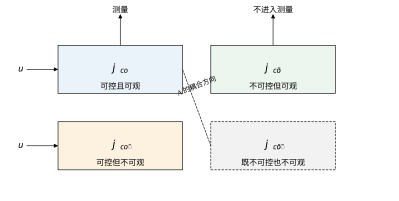
左上块是唯一可以被“输入—输出”这条通路完全支配的部分，最小实现就是它的阶次。右上块能控但不能观，输入能推动它，输出看不见它，它对闭环行为有影响却无法从输出反推，是最危险的一块；左下块能观不能控，可以估计但改不动；右下块与输入输出都无关，可以直接删掉。做降阶之前先看这张图，比直接对传递函数做消零可靠得多，因为它不依赖零极点严格对消。
第一，只答“能不能”，不答“多好”。秩满只是最低门槛。电机测转角的能观条件数是 25.0，测转速时秩为 2，两者是质的差别；但同样是满秩，条件数 1.674\times10^{4} 与 25.0 的闭环表现会差出几个数量级。判据给不出“够不够用”的答案，那要靠 51.6 节的噪声放大估算和闭环仿真。
第二，状态数不等于必要阶次。三阶电机模型里，若耦合系数为零，Hankel 秩降到 2，最小实现只有两阶；但若直接把状态数当阶次，会白白多设计一个观测器通道，还会把数值条件弄坏。判据只说满秩，不告诉你哪几个状态是多余的。
第三，模态分解依赖可对角化。用特征向量判断某模态是否缺失，前提是 A 有完整的特征向量组。遇到重特征值或缺陷矩阵（Jordan 块），特征向量退化，这套说法失效；此时 PBH 判据仍然成立，因为它是秩条件，不依赖对角化。工程上若发现特征向量矩阵条件数极大，应改用 PBH。
第四，时变、非线性、分布参数对象不在适用范围内。线性化模型的判据只在该工作点附近有效。机械臂在大范围运动时，不同位形的能观性可以完全不同；这时要沿轨迹逐点检查，或者直接用时变系统的能观性 Gramian，而不能拿一个点的结论推广到全程。
第五，离散判据对采样周期不连续。T_s 从 \pi 挪开 1\%，行列式就从 10^{-16} 跳回正常量级。判据在边界附近没有“逐渐变差”的过程，只有一个断崖。这意味着不能靠“参数稍有偏差也不要紧”的直觉来选采样周期。
表 51-19 把常见场景与判据的适用性放在一起，供现场快速对照。
| 场景 | 判据是否适用 | 建议做法 |
|---|---|---|
| 线性定常、工况单一 | 适用 | 直接算秩与条件数，按 51.3 节七步走 |
| 线性定常、多工况 | 部分适用 | 各工况分别建模，取最坏工况的结论 |
| 增益调度、慢时变 | 部分适用 | 每个调度点检查，并检查切换瞬间 |
| 强非线性、大范围运动 | 不适用 | 用经验能控性 Gramian 沿轨迹积分 |
| 含纯延迟 | 需改造 | 延迟用 Padé 近似会引入假模态，优先用 Smith 预估结构 |
| 分布参数（柔性梁、管道） | 不适用 | 先截断为有限维模态，再对截断模型判据 |
| 仅做快速摸底 | 适用 | 只算 \det 与秩，条件数留到详细设计阶段 |
最后一行的意思值得点明：判据不必每次都做全套。方案筛选阶段，一个行列式是否为零、一个秩是否等于 n，几行代码就能算，足以否掉明显不可行的方案；等到进入详细设计，再补条件数、Gramian 与噪声放大估算。把检查分级，比一次性做全更有可操作性。
初学时常有这样一个想法：既然观测器能根据输出估计状态，那不能观的状态是不是也能估出来，只是慢一点？
答案是不能。观测器的修正项只作用在输出能“看见”的方向上。把估计误差 e=x-\hat{x} 的演化写出来，\dot{e}=(A-LC)e，其中 LC 的所有列都落在 C 的行空间里。若某个方向对 C 完全不可见，LC 在该方向上没有任何分量，误差在这一方向上的演化就退化成 \dot{e}=Ae，与观测器增益 L 完全无关。换句话说，观测器只能修正它看得见的部分，看不见的部分只能按对象自身的动态走。
这个结论有一个容易误解的推论。若不能观模态本身稳定，误差在该方向上确实会衰减，看起来“估出来了”；但这是对象自己衰减的结果，不是观测器的作用。一旦有扰动重新注入该方向，误差会再次出现，而且不会被纠正。工程上的表现是：稳态看着挺好，一有负载扰动就慢慢偏掉，很久才回来。这与“可检测”的定义是一致的——能保证稳定，不能保证准确。
真正要准确估计，只有两条路：加一个能看见该方向的测点，或者利用已知的初始条件（例如每次回零时复位）。前者是改结构，后者是改流程。两条都不涉及控制器参数，这也再次说明能观性是结构性质。
本章的每一个数字都来自两个脚本：code/ch051_sim.py 负责算，code/ch051_figs.py 负责画。前者不画图，后者不算法，两边靠导入衔接。这样分工的好处是，正文里引用的数值可以在不看图的情况下复算，图也不会因为改了一次计算而失真。
运行方式只有两条命令，都在 book 目录下执行：
"D:\Anaconda3\envs\py311\python.exe" code\ch051_sim.py
"D:\Anaconda3\envs\py311\python.exe" code\ch051_figs.py第一条打印六组报告，第二条在 figs/ch051/ 下生成 11 张图的 SVG 与 PDF 两份文件。依赖只有 numpy、scipy、matplotlib 与 control。这里要注意一点：本章全部判据都可以只用 numpy 与 scipy 实现，control 只在画框图和求连续 Lyapunov 方程时用到；control 的部分功能（例如 minreal）依赖 slycot，而 slycot 在 Windows 上安装麻烦，所以本章刻意避开了它，用 Hankel 矩阵求秩来替代最小实现。
脚本按三层组织：
| 层 | 内容 | 对应函数 |
|---|---|---|
| 对象层 | 三个被控对象 | plant_motor、plant_param、plant_oscillator |
| 工具层 | 判据与指标 | ctrb_mat、obsv_mat、sigmas、rank_tol、pbh_ctrb、pbh_obsv、gramian_c、gramian_o、gramian_c_finite、min_energy、minimal_order |
| 报告层 | 按主题成组输出 | report_motor、report_param、report_gramian、report_sampling、report_scaling、report_sensor_config |
工具层一律只接受数组，不接受对象句柄，也不打印任何东西。所有打印集中在报告层，这样换一个对象只需在报告层改两行，工具层不用动。
三个对象分别是：51.4 节的三阶直流电机（plant_motor，R=0.5、L=0.01、K_e=K_t=0.05、J=0.002、b=5\times10^{-4}）；带两个结构参数的二阶参数化对象（plant_param，A=\begin{bmatrix}0&1&0\\-2&-3&0\\0&0&-4\end{bmatrix}、B=[0,1,b]^T、C=[1,0,c]）；以及 51.5 节的无阻尼振子（plant_oscillator，\omega=1）。前两个用来演示“参数连续变化时结论如何翻转”，第三个用来演示采样。
整章判据的技术核心只有两段：一段是把“秩”这件事做对，一段是把“最小能量”这件事算对。
秩的问题在于容差。numpy.linalg.matrix_rank 的默认容差是 \sigma_1 \cdot \max(m,n) \cdot \varepsilon，跟着最大奇异值走；量纲一变，\sigma_1 变，容差跟着变，结论就可能翻。本章统一用相对容差 \tau：
def sigmas(M):
"""返回矩阵的奇异值降序数组。"""
return np.linalg.svd(np.asarray(M, dtype=float),
compute_uv=False)
def rank_tol(M, rel: float = 1e-10) -> int:
"""相对容差秩：sigma_i > rel * sigma_1 的个数。
rel 的取法见 51.7 节：双精度辨识模型取 1e-6 到 1e-8，
结构已知的机理模型可取 1e-10。
"""
s = sigmas(M)
if s.size == 0 or s[0] <= 0.0:
return 0
return int(np.sum(s > rel * s[0]))这段代码只有十几行，却是全章引用最多的一段。rank_tol 的返回值对 rel 敏感，而且敏感性是可以算出来的：电机能控矩阵的最小奇异值是 16.05，与 \sigma_1=2.687\times10^{5} 的比值是 6.0\times10^{-5}。于是取 rel=1e-5 判成秩 3，取 rel=1e-3 就判成秩 2——同一台电机、同一组数据，容差差两个数量级，结论翻转。这个比值本身给出了“多小的耦合会被判成不能控”的量化答案，也正是 51.7 节要求把容差写进配置文件的原因。参数化对象更能说明问题：b=10^{-6} 时，rel 从 10^{-8} 往下走都判 3，到 10^{-6} 就变成 2。rel 不是随便填的数字，它对应“我认为多小的耦合可以忽略”这一工程判断。
第二段是有限时域最小能量。能控 Gramian 满足 Lyapunov 方程
AW_c+W_cA^{T}+BB^{T}=0 \tag{51-44}
它对应 T\to\infty 的能量，x^{T}W_c^{-1}x 给出从原点到达 x 的最小能量。有限时域则用积分定义直接算：
def gramian_c_finite(A, B, T: float, n: int = 400):
"""有限时域能控 Gramian：W(T) = ∫_0^T e^{At} B B^T e^{A^T t} dt。
用 Simpson 复合公式，步长 T/(n-1)，n 取奇数。
"""
t = np.linspace(0.0, T, n)
W = np.zeros((A.shape[0], A.shape[0]))
h = t[1] - t[0]
for k, tk in enumerate(t):
E = expm(A * tk)
M = E @ B @ B.T @ E.T
w = 1.0 if k in (0, n - 1) else (4.0 if k % 2 == 1 else 2.0)
W += w * M
return W * h / 3.0
def min_energy(W, x) -> float:
"""到达 x 的最小能量 x^T W^{-1} x；W 奇异时返回 inf。"""
try:
return float(x @ np.linalg.solve(W, x))
except np.linalg.LinAlgError:
return float("inf")min_energy 里用 solve 而不是 inv，是数值实现的常规做法：解一次线性方程比求逆再乘更稳，也更省。当 W 接近奇异时 solve 会抛 LinAlgError，此时返回无穷大，语义正确——能量无穷意味着到不了。
参数化对象把这件事算得很干净。取 b=1、目标状态 x=[0,0,1]^T，脚本给出的最小能量是 200；取 b=0.1，能量变成 2\times10^{4}；b 再降一个数量级，能量再涨一百倍。规律是 E_{\min}=200/b^{2}。这个式子可以直接从 \det\mathcal{C}=-6b 推出：能控矩阵的行列式与 b 成正比，而最小能量大致与行列式的平方成反比。物理含义是，b 是输入到第三个状态的耦合，耦合越弱，把第三个状态推到指定值需要的输入幅值越大，能量按平方增长。b=0.01 时能量已经是 2\times10^{6}，实际执行器给不出，于是“数学上可控”和“工程上可控”在这里分道扬镳。
main() 顺序调用七个报告，每组之间用一条分隔线隔开。表 51-20 汇总了每组的关键输出与它对应的正文结论。
| 报告 | 关键输出 | 对应的正文结论 |
|---|---|---|
report_motor |
能控奇异值 2.687\times10^{5}/144.9/16.05，能观 25.00/1.000/0.99995，Hankel 秩 3 | 51.4 节电机例子、51.9 节降阶 |
report_param |
\det\mathcal{C}=-6b、\det\mathcal{O}=6c，b=0 时秩 2 | 51.4 节结构参数、51.2 节解析判据 |
report_gramian |
W_c 奇异值 0.2832/0.0891/0.00275，E_{\min}=200/b^{2} | 51.6 节最小能量、51.7 节参数影响 |
report_sampling |
T_s=\pi 时 |\det\mathcal{C}_d|=6.108\times10^{-16} | 51.5 节病态采样 |
report_scaling |
条件数 1.674\times10^{4}/9.017\times10^{5}/4.740\times10^{4}/4.010\times10^{4} | 51.7 节单位缩放、51.10 节数值规范 |
report_sensor_config |
六种测点组合的秩与条件数，仅测转角 25.0 最优 | 51.10 节传感器配置 |
report_sensitivity |
各参数 +1% 时四个指标的变化百分比 | 51.7.10 节参数敏感度 |
读这七组输出时有三处容易看漏。
第一组里，PBH 最小奇异值随特征值变化剧烈：\lambda=0 时是 0.998，\lambda=-2.904 时 0.307，\lambda=-47.35 时只有 9.9\times10^{-3}。三个都是非零，所以三个模态都能观，但快模态的 PBH 值比慢模态小两个数量级。这解释了为什么观测器对快模态的估计更容易被噪声淹没——不是不满秩，而是“勉强满秩”。另外，u\to\theta 的传递函数没有零点，u\to\omega 有一个零点在原点，前者说明电机从电压到转角是严格真有理且无非最小相位问题，后者是微分关系的必然结果。
第二组里有一个反直觉现象：b 从 1 降到 0.1，条件数从 68.6 降到 59.1，看起来耦合变弱反而条件变好了。这不是错误，而是条件数作为比值会被 \sigma_1 一起牵着走：b=1 时 \sigma_1 大，\sigma_{\min} 也大；b 减小时两者同时缩，比值不必单调。真正单调的是 \sigma_{\min}：0.269\to0.143\to0.0160\to1.60\times10^{-4}，一路跟着 b 走。所以在跟踪“耦合变弱”这件事上，看 \sigma_{\min} 比看条件数可靠，这也是 51.7 节把两者分开列表的原因。
第三组里，T=0.2 时 W_c(T) 的最小奇异值只有 3\times10^{-6}，到 T=5 才长到 0.00276。对应的最小能量从 1.36\times10^{5} 降到 199.7，与无穷时域的 200 只差 0.15\%，脚本给出的 W_c(5) 与 W_c(\infty) 相对误差是 5.99\times10^{-4}。这组数字说明“允许时间”是一个硬约束：想用 0.2 秒把第三个状态推到 1，能量需求是给足 5 秒的 680 倍。
第四组里，T_s=2\pi 时 |\det\mathcal{C}_d| 掉到 1.013\times10^{-46}，比 T_s=\pi 还小三十个数量级，因为 \Gamma 本身已经为零。脚本还加了一行阻尼对照：把 A 减去 0.05I 之后，T_s=\pi 处能观行列式仍是 1.766\times10^{-15}，秩仍是 1。阻尼救不了半周期采样，因为两个模态在 z 平面上仍然重合到同一点。
第六组里，仅测转角的条件数是 25.0，加一个转速变成 1263，加电流变成 2389，三个全测变成 2702。秩都是 3，但条件数每加一个测点就恶化一个量级。这为 51.10 节的结论提供了直接证据：传感器不是越多越好，够用就行。
脚本的三层结构是为改写准备的。换成自己的对象，只需在对象层加一个 plant_xxx() 返回 (A,B,C)，再在报告层里替换三行：报告标题、对象调用、结论阈值。工具层完全不改动。
改写时有四条纪律值得坚持。
第一，不要为了让结论好看而调容差。容差应当在看结果之前定好，由模型精度推出，写进配置。先算后调容差，等于用结论反推前提，这类做法在评审时站不住。
第二，单位统一在入口做。脚本里的 report_scaling 就是为了提醒这件事：同一个电机，转角用度，条件数从 1.674\times10^{4} 变成 9.017\times10^{5}，涨了 54 倍；时间用毫秒，能观条件数从 25.0 变成 4.0\times10^{4}。若不统一单位，后面所有的阈值都要跟着改，改漏一个就出错。
第三，同时打印 \sigma_{\min} 与条件数。前者单调反映耦合强弱，后者反映数值可解性，两者不能互相替代。表 51-20 中每一组都保留了两列，就是为了避免只看一个。
第四，离散系统一定要在实际选定的 T_s 上复算，不要用连续结论外推。脚本第四组已经显示，T_s 偏离 \pi 只有 1\%，行列式就从 10^{-16} 跳回 10^{-2} 量级，中间没有任何过渡。这种断崖式行为无法用“差不多”来覆盖。
若要把这套检查接到实际项目里，建议把它做成一个独立的小工具：输入是一个模型文件（A、B、C、D 与单位说明），输出是一页报告，包含秩、\sigma_{\min}、条件数、PBH 值、Hankel 秩与采样核对结果。每次模型更新跑一次，结果存档。这件事的成本很低，但它能在方案阶段挡掉大部分注定失败的控制器设计。
code/ch051_figs.py 的结构与 ch051_sim.py 一一对应：先导入对象与工具函数，再为每张图写一个函数，最后在 main() 里顺序调用。每张图都调用 save(fig, stem)，一次输出 SVG 与 PDF 两份，文件名相同、扩展名不同。正文引用 SVG（矢量、体积小、浏览器直接渲染），排版印刷用 PDF（字体嵌入可靠）。两种格式都不使用位图，避免缩放后模糊。
画图分三类，对应三个语义模块，不能混用。表 51-21 是本章的分工。
| 图的类型 | 使用的模块 | 本章例子 |
|---|---|---|
| 数据图（曲线、柱状、对数坐标） | plot_styles |
图 51-3、51-4、51-6、51-8、51-9 |
| 信号流与框图（方块、求和点、引出点） | block_styles |
图 51-1、51-7、51-10 |
| 流程与结构（流程框、判断菱形、泳道） | flow_styles |
图 51-11 |
分工的意义不只是好看。框图里的求和点必须带符号、引出点必须画成实心圆、信号线不能穿过方块，这些都是约定；数据图的线宽、参考线样式、图例位置也有统一基准。混用模块会让图的“语法”不一致，读者一眼就能看出拼凑感。
图内文字有一条硬约束：中文用纯文本，公式单独用 $...$，两者不写进同一个字符串。 本章第一轮生成时，坐标轴标签写成了“耦合系数 b”这种混排，运行时刷出一屏缺字形告警，输出的图里中文全是方框。原因是字体回退只对纯文本生效，混排字符串里的中文被当成数学文本处理，找不到对应字形。把标签改成“耦合系数 b”、“状态 x1”、“采样周期 Ts (s)”之后，告警清零。这条经验对所有中文技术图都适用。
11 张图的文件清单如下，全部位于 figs/ch051/：
fig_051_01_state_structure fig_051_07_motor
fig_051_02_span_growth fig_051_08_scaling
fig_051_03_rank_vs_b fig_051_09_sampling
fig_051_04_reachable fig_051_10_kalman
fig_051_05_pbh fig_051_11_flow
fig_051_06_gramian每个名字对应两个文件，例如 fig_051_03_rank_vs_b.svg 与 fig_051_03_rank_vs_b.pdf。正文中图号与文件名里的编号严格对应，改动图的内容时不需要改文件名，但改动图的含义时必须同时改图号与文件名，免得后来的读者对不上。
代码跑通不等于结果正确。本章用了四种交叉核对，每一种都能独立发现一类错误。
第一种是解析式对数值。参数化对象的能控行列式有闭式解 \det\mathcal{C}=-6b，脚本在 b=1 时算出 -6.000，b=0.1 时算出 -0.600，与解析式逐位吻合。这条核对能抓住矩阵拼装错误、状态顺序错误、B 的转置写错这一类问题。凡是能手算的，一定要手算一遍。
第二种是判据之间互证。b=c=0 时，秩判据给出秩 2，PBH 在 \lambda=-4 处给出两个零，Hankel 秩也是 2，三个独立算法指向同一个结论。若三者不一致，说明至少有一个环节写错了。这种互证比单独看一个判据可靠得多，因为三个算法的失败模式不同：秩判据怕缩放，PBH 怕特征值求错，Hankel 怕马尔可夫参数算错。
第三种是同一物理量的两种算法。能控 Gramian 有两条路径：解 Lyapunov 方程得到 W_c(\infty)，或者按定义做数值积分得到 W_c(T)。脚本在 T=5 s 时比较两者，相对误差 5.99\times10^{-4}。这个误差来自积分步长与截断时间，量级合理；若误差到了 10^{-2} 以上，就说明积分步数不够或者 T 太短。
第四种是对偶核对。把 (A,B) 换成 (A^{\mathsf T},C^{\mathsf T})，能控侧的所有结论都应当与能观侧对应。本章参数化对象的两个行列式只差一个符号，正是这条对称性的体现。写代码时若发现对偶两侧结果差得离谱，先查是不是有一侧用了转置而另一侧没用。
还有几条实现层面的注意点，都是踩过的坑。其一，浮点数不要用 == 比较零，判秩一律走 rank_tol。其二，expm 要用 scipy.linalg.expm，不要用逐元素指数 np.exp，后者对矩阵没有意义。其三，解 Lyapunov 方程时若 A 有零特征值（积分器），方程无解，脚本会抛异常；遇到这类对象应改用有限时域 Gramian。其四，打印格式统一用科学计数法三位小数，避免同一个数在不同报告里显示成不同精度，读者误以为是两组数据。
四条核对加四条注意点，构成了本章数值结果的可靠性基础。它们不增加任何理论内容，却能把“跑出了一个数”变成“这个数可信”。
脚本是 Python 写的，但结论要拿到别的环境里用。两处最常见的移植目标，各有一组注意点。
移植到 MATLAB 时，函数名几乎一一对应：ctrb、obsv、rank、lyap、balreal、minreal。用起来方便，但有三处差别要留意。第一，rank 的默认容差与 NumPy 不同，同一个矩阵可能一个判 3、一个判 2；移植时必须显式传容差，即 rank(M, tol)。第二，ctrb 在高阶时数值表现差，官方文档也建议改用 PBH；本章的 pbh_ctrb 可以直接照搬。第三，minreal 依赖状态空间的零极对消，对接近对消的模型会误删模态，用之前先看 Hankel 奇异值。
移植到嵌入式时有另一组约束。目标机通常没有 SVD，也没有浮点矩阵指数，所以判据一般不在线跑，而是在设计阶段跑一次，把结果（秩、\sigma_{\min}、条件数、测点组合）以常量表的形式烧进程序。在线只做两件事：按表选测点、按表设增益。这样既省算力，也避免了定点运算下奇异值分解的精度问题。
若确实需要在线判断（例如增益调度要按工况切换模型），建议只做标量检查：对每个预存的模态算一次 PBH 的近似值，或者监视闭环残差的能量。完整 SVD 留给上位机，下位机只做阈值比较。
还有一条移植纪律：同一份检查在两个环境里跑，结果必须逐位可解释。 做不到逐位一致是正常的，浮点库不同；但每一个差异都要能说清来源（容差、求和顺序、特征值算法）。说不清，就说明有一个环境的实现有问题。这条纪律比任何单独的数值技巧都重要，因为它是发现隐蔽错误的最后一道关。
判据的结论很脆弱：改一个测点、换一个采样周期、把一个参数从 0.05 改成 0.5，秩或条件数就可能翻转。靠人每次重跑、肉眼比对不现实，正确做法是把本章的检查写成断言，交给测试框架。
四条断言覆盖了绝大部分退化。第一，秩：rank_tol(ctrb_mat(A, B)) == n，容差显式传入，与报告里的 \tau 一致。第二，条件数：不超过对象专属的上限，上限由基线乘一个倍数得到，而不是拍一个 10^{6}。第三，PBH：所有不稳定模态的 \sigma_{\min} 大于阈值，稳定模态可以放宽。第四，一致性：Hankel 秩等于秩判据给出的秩，不等就说明存在接近对消，或者 D 的处理有误。
第三条与第四条是互补的：前者逐模态看，后者看整体，任何一条单独都可能漏。
断言里最容易做错的是阈值。写成固定常数，换一台电机就要改；写成相对量，又需要一个基线。推荐做法是把第一次评审通过的数值冻结成基线文件，之后每次只比较比值：条件数涨到基线的 3 倍以上就报警，跌到三分之一也要报警——后者往往意味着模型被简化掉了某个模态，而简化的人以为自己在做优化。
测试的组织方式很朴素：每个对象一个用例，参数用表驱动，断言失败时打印完整的奇异值序列，而不是只打印“期望 3、实际 2”。只打印秩，排查时还得再跑一遍；打印序列，一眼就能看出是哪个方向掉的。
最后要说清边界：回归测试只能防止“改动引入新退化”，不能证明模型正确。模型本身错了（工作点不对、单位混用），四条断言可能全部通过——因为错模型也可以是满秩的。所以测试是底线，不是免责书。